▢ 통관절차는 수입신고(통관신청) 조건을 갖추기 위한 과정입니다.
▢ 수입신고(통관신청)은 반입(전)후 관련기관의 수입검사를 모두 완료한 후에 합니다.
1. 보세, 보세화물, 보세구역, 특허보세구역, 보세운송, 관리화물
※ 보세운송승인 물품은 창고에서 반입예정물품 목록으로 수신되어 쉽게 확인이 됩니다.
※ 보세운송승인 물품은 창고에서 해상수입물품의 경우 컨테이너는 승인일로부터 보통 10일이내,
벌크화물은 3일이내 반입신고 완료하여야 합니다.
(보세운송에관한 고시 제1장 제6조(보세운송기간))
기한내 반입이 어려울 경우 CY에 있는 경우 보세운송신고 당사자가 연장신청하고,
창고에 도착한 물품의 경우 창고의 반입지연 사유서를 첨부하여 보세운송신고 당사자가 연장신청 할 수 있습니다.
선박에 있는 화물은 보세구역을 하선장소로 지정하여 하선신고를 하게되는데
보통 부두의 접안시설 옆에있는 컨테이너야적장(CY)입니다.
하선신고는 보세운송처럼 창고에서 수신되는 반입예정정보에 뜨지 않기 때문에,
관리화물 등이 하선장소가 '동일냉장 보세구역'으로 지정이 되어 반입되는 경우에는
화주 등이 연락을 해줘야 알 수 있습니다.
※ 관리화물은 해당화물의 하선신고 장소를 동일냉장보세구역으로 하는것입니다.
관리화물은 세관에서 직접 물품을 보겠다는 의미입니다.
세관 직원의 입회 및 지시가 없이는 컨테이너 개봉금지입니다.
※ CY로 하선신고후 관리화물 지정시 CY로 하선신고된 내역을 취소후 동일냉장으로 하선신고 됩니다.
※ 하선신고 물품은 해상물품 컨테이너의 경우 3일이내(토,일 공휴일 등 노는날 제외???) 도착이 완료되어야 합니다.
(보세화물 입출항 하선 하기 및 적재에 관한 고시 제19조(하선장소 물품반입) 컨테이너화물 접안일로부터 3일이내 반입.)
※ 화주(관세사)에서 관리화물이 있다고 연락이 옵니다.
※ 세관담당자는 언제 작업할 것인지 시간조율 연락이 옵니다.
※ 전자seal이 부착되어 있으면 해제등록이 필요합니다.
특허보세구역의 종류는 다양합니다. 동일냉장은 특허보세구역 영업용보세창고 입니다.
일반화물 보관 + 보세화물 보관 가능합니다.
2. 보세화물의 통관(=통관절차를 완료한는 것)
각 주무부처(식약청, 검역원, 수품원 등)의 수출입절차(검사, 검역 등) 통과 등이
이상없이 진행된 후 수입신고(통관신청)을 하면,
세관에서 검토하여 이상이 없을시 관세등을 납부하면 수입신고가 승인이 됩니다.
통관신청(수입신고)이 승인되면 승인정보가 수신되고 창고에서 수입신고수리후반출신고하면
보세화물 상태에서 해제되고 반출(출고)할 수 있습니다. 일반화물(내국화물)로 분류됩니다.
출고의뢰를 받았을때 해당물품이 수입신고수리 및 수입신고수리후반출신고가 완료되었는지 확인해야합니다.
1. 먼저, 보세화물 종류별로 보관 및 반입조건이 있습니다. ※ 자세한 사항은 다른 관공서 정보 참고
○ 전제조건
① 특허보세구역 특허를 받은 공간(동결실 2곳 제외 창고내 전체)
② 수입식품등 보관업 영업등록된 공간(특허보세구역 특허 공간)
③ 식품보존업 영업신고된 공간(창고내 전체)
○ 수입축산물의 경우, 전제조건을 충족하고 AND
① 검역대상물품의 경우
A. 축산물 보관업 영업허가된 공간 : 102호, 103호, 201호, 301호, 401호방
B. A.중에 수입식용축산물보관장(검역시행장) 지정된 공간 (102호 제외)
※ 검역대상물품이 아닌 경우에 입고하면 안됩니다. (벌금)
※ 따라서 검역대상물품의 경우 ==> 103호, 201호, 301호, 401호방
② 검역대상물품이 아닌 경우
A. 축산물 보관업 영업허가된 공간 중에 검역시행장이 아닌 공간 : 102호
※ 수입산 치즈를 예를 들면 축산물로 분류되며 검역대상이 아닌 경우가 있습니다.
○ 수입식물류로 분류되는 경우, 전제조건을 충족하고 AND
① 수입식물류 검역장소로 지정된 공간. 보통 특허보세구역 특허 공간
※ 지정이 안되어 있는데 반입을 하면 벌금인지는 확인이 안됩니다.
※ 지정이 안되어 있으면 반입되었더라도 검사가 안되어서 다른창고로 보세운송하여 보내야 합니다.
A. 축산물 반입장소 제외 모두 가능
○ 축산물 제외한 물품(수입 및 내국)은 축산물보관장소 제외한 곳 중 제한없습니다.
① 전제조건을 충족한 공간 중에 수입축산물 보관장소 제외.
2. 통관절차중 : 보세화물 반입시, 반입후 관련기관의 수입검사


20250611 씨케이 염장와사비줄기
명지우과장 : hs코드가 해당이 없었다... 한번도 식물검역신청 한 경우가 없다...
이것은 식물검역대상이 아닌것으로
명지우과장 : hs코드가 해당이 없었다... 한번도 식물검역신청 한 경우가 없다...
이것은 식물검역대상이 아닌것으로
1. 화물관리번호, 해상화물의 운송계약, 선사와 M/BL, 포딩과 H/BL, B/L 보는법

A. 포워딩, 콘솔
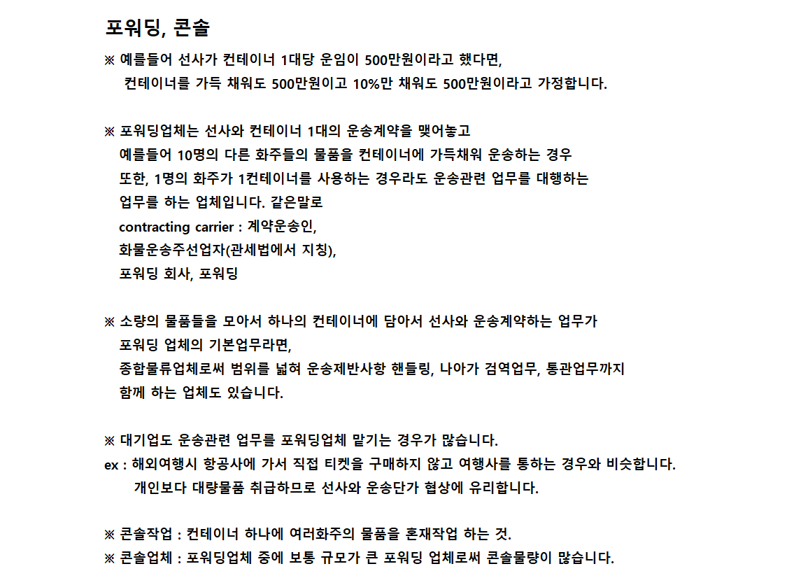B. 해상화물의 운송계약 예시

C. 해상화물의 운송계약 정리, 화물의 소유권
▸ 포워딩 업체가 발행한 House B/L은 선사가 가지고 있는 화물, 예들들어 CY에 도착한 화물을
인도 받을수 있는 서류가 아닙니다. 선사와 관련없는 서류이고 포딩과의 계약서류입니다.
▸ 관리화물인 경우 3일이내 반입이라는 관세법상 규칙때문에 선사의 D/O가 발행전이라도
물품이 반입될 수도 있고 이 경우 동일냉장에서 등록해놓은 물품의 화주가 진정한 화주가 아니고
선사의 원본 B/L 인수 및 D/O발행 전 까지는 선사의 소유임을 인지해야 합니다.
관리화물이 아닌 경우라면 선사는 원본 B/L 인수하고 D/O발행 원칙을 지키는 것으로 알고 있습니다.
▸ House B/L인 경우, 포워딩 업체가 선사에 원본 B/L 제시 및 선사의 D/O발행에 의해서 창고로
반입되겠지만, 이 경우에도 동일냉장에서 등록해 놓은 물품의 화주가 진정한 화주가 아니고
포워딩의 D/O발행 및 창고에서 확인하기전 까지는 포워딩의 소유임을 인지해야 합니다.
▸ ※ Master B/L 발행한 물품인지, House B/L 발행한 물품인지 확인을 한 번 해줘야하고,
그에 따라 확인해야 할 D/O를 인지하고 확인해야 하며,
이 후에도, 통관 전이라도 양도가 있으면 화주는 바뀔수 있습니다.
창고에서 수신되는 통관정보에는 화주정보도 있습니다. 반드시 확인 해야 할 정보입니다.

▸ 송금방식(T/T), 추심방식

▸ 신용장거래(은행의 지급보증) (유산스 Usance)
※ 유산스(Usance)란 일반적으로 신용장(L/C, Letter of Credit)방식에 의한
무역결제에 있어 어음의 지급기한을 의미하며,
수입자가 일정기간(통상 30일, 60일, 90일, 150일) 후에 수출대금을 지급하는 단기연불수입의 일종이다.
연불수입(수입 상품의 대금을 결제하는 방식의 하나.
선금 지급이나 전액 외상으로 수입 상품을 공급받고 대금은 일정 기간에 나누어 결제한다.)
※ L/G : Letter of Guarantee : 수입화물선취보증
신용장 거래방식에서 원본 B/L이 늦어질때 은행이 보증을 하여 원본 B/L이 도착하면
L/G와 교환할것을 약속하는 서류.
개설의뢰인(화주)는 이 서류를 원본 B/L처럼 선사에 제출하여 화물인 인도받습니다.
물류비용 발생 및 통관지연을 방지하기 위해 물품을 먼저 인도하고
원본 B/L이 도착하면 서로 교환하게 됩니다.
A. 신용장 개설 합의, 신용장 개설

B. 신용장을 Buyer에게 전달

C. 신용장에서 요구한 서류를 Seller에게서 받는 과정
D. Seller가 물품대금을 받는 과정
▸ 개설은행은 신용장에서 요구한 서류만을 심사하여 일치하면 통지은행에 대금을 지급한다.
▸ 대금을 지급받은 통지은행은 Seller에게 대금을 지급한다.
▸ Buyer는 전달받은 물품에 이상이 있더라고 대금지급과정에 관여할 수 없다.
E. 신용장거래방식의 특징
▸ 수익자 (Seller)
신용위험 회피
신용장을 담보로 대출을 받을수 있다. (무역금융)
▸ 개설의뢰인 (Buyer)
수수료가 많다
개설의뢰인에게는 좋은게 별로 없다고 설명함.
2000년 전에는 80%를 차지하다가 현재 10%정도라고 설명함.
▸ 은행
수수료를 높게 받는다고 설명함.
※ D/O 관련 대법원 판결정보
C. 해상화물의 운송계약 정리, 화물의 소유권 내용 참고
Master B/L의 경우 선사의 D/O를 받기전까지 화물은 선사에게 소유권이 있고,
House B/L의 경우 포딩의 D/O를 받기전까지 화물은 포딩에게 소유권이 있으니,
선사나 포딩과 소유권 분쟁에 휘말리지 않으려면 각 D/O를 챙겨서 확인하여야한다.
▢ 물품반입 유형 : 입항반입, 보세운송반입, B/L분할 반입

▢ 물품반출 유형

▢ 선용품 관련 정보
▢ 영업프로그램 및 보세화물프로그램이 통합되어 있습니다.
▢ 로그인 방법과 간단한 메뉴설명만 하고 세부적인 사용법은 실무에서 다룹니다.
▢ 공인인증서를 등록하였다면 프로그램 종료시까지 유지됩니다.
1. 로그인 방법, 화면설명, 유니패스 송수신 메뉴 사용시 공인인증서 등록방법
A. 바탕화면에서  더블클릭
더블클릭
① 사번 입력후 엔터치면 우측에 이름이 나옵니다.
202203(김기수),202204(양충영), 202205(백명탁), 202206(차승환), 202207(김경아), 202208(김인애), 202209(윤하늬)
② 비밀번호 입력후 엔터 두번 치면 로그인 됩니다.

B. 첫화면에 일정표와 유통기한경과물품 목록창이 뜨는데, 필요 없으면 닫습니다.

C. 처음화면입니다. 간단한 메뉴 설명입니다.

D. 유니패스에 송수신되는 메뉴 사용시 인증서 로그인창이 뜹니다. (인증서 등록방법)
① 인증서위치 선택
② 인증서 선택
③ 인증서 비밀번호 입력, dongil3368
④ 확인
E. EDI(Electronic Data Interchange) : 전자문서교환, 보세화물 관련 문서입니다.
세관 유니패스와 관련된 모든 문서 및 송수신 결과 등 확인.

F. 보세화물관리 메뉴

G. 수신문서관리 메뉴
H. 기타정보 메뉴

I. 내국화물관리 메뉴
▢ 특허장의 게시 등
(기록전)표시가 뭔지 몰라 지웠는데, 자세하게 기록한것이 맨 아래에 있다. 자세하게 기록하겠다는 의미인듯
※ 세관봉인대 관리대장(별지 제12호서식), 세관봉인대 봉인물품 반입확인대장(별지 제5호서식), 알아보기 (정확한 검색이 안되어 스스로 해석해봄)
1. 세관봉인대 관리대장(별지 제12호서식)은 집접 시봉하는 입장에서 작성하는것인데 냉동창고에서는 관련이 없다.
2. 세관봉인대 봉인물품 반입확인대장(별지 제5호서식)은 세관봉인대가 붙어있는것이 들어오면 기록하는것, 냉동창고에서 기록하는것이다.
- 관리화물(전자씰)은 해제등록하는 것이고, 함께 채워져있는 세관씰이 세관봉인대이다??
- 검색기대상이었다가 해제되어 들어오는경우 세관씰이 붙어있음.
★ 유니패스 화물진행정보에 많은 정보가 있다, 현재의 상태를 알려준다. ★
★ 고시 등에 서식이 없어도, 고시 등의 내용에 따라 작성해야하는 대장들이 있다 ★
★ 어느해의 점검시에 보고하라고 하였으나 몇년이 지나도록 보지않는 것들이 있다.(반송화물 반출보고서) ★
※ 보세창고에서 반송화물은 불합격품(수산생물) 등, 통관하지 않고 수출(반송)하는 경우인데
보세화물이므로 보세운송으로 이동하는데, 반송신고필증(반송신고수리)를 먼저 받아야 한다.
'반송화물 반출보고서'서식을 못찾겠다. 보세화물특별점검팀에서 요청하는 자료였던가?
[보세사제도 운영에 관한 고시]
▢ 세관봉인대 관리대장(별지 제12호서식)
※ 보세사가 작성 : 직접 시봉하는 입장과 봉인되어 반입되는 경우의 기록방법이 차이가 있음
▢ 환적화물 컨테이너적출입 관리대장(별지 제10호서식)
▢ 내국물품 반출입 관리대장(별지 제8호서식)
▢ 보수작업 관리대장(별지 제9호서식)
※ (보세화물관리에 관한 고시에서 보수작업완료보고서 내역들 정리하는것)
※ 한글스티커 부착도 보수작업이지만, 자율관리보세구역이면 신청및 승인 생략
※ 원산지 부분을 건드리는 경우는 보수작업 신청 및 승인을 하여야 한다. 몇년이고 해당 작업이 없다.
▢ 장치물품 수입신고전 확인대장(별지 제11호서식)
※ 반입작업할때 보는것은 해당이 안되고, 반입후 통관전에 검품하였을때 기록하는 것이다.
▢ 그 밖에 보세화물 관련규정에서 보세사의 직무로 정한 각종 대장
[보세화물관리에 관한 고시]
▢ 반입물품 이상 보고서(별지 제1호서식)
※ 이상보고 승인된 것을 확인 후에 반입을 잡야야 한다.
※ 세관의 요청자료 미비되면 10일이고 20일이고 반입을 못잡는다. 보세운속기간 연장하여야 한다.
※ 수정된BL인정, 수정된BL이 인보이스 팩킹 수정보다 어려운점을 인정하여 수정된BL과 팩킹으로 인정.
▢ 세관봉인대 봉인물품 반입확인대장(별지 제5호서식)
※ 보세구역 운영인이 작성.
▢ 보수작업 완료 보고서(별지 제22호서식)
※ 신청자(화주)가 보세사의 확인도장 받고 세관에 보고, 보세창고는 완료보고서 보관, 보수작업관리대장 작성
※ 보수작업 관리대장(별지 제12호서식)과 짝을 이루는 서류이다.
※ 원산지 부분을 건드리는 경우는 보수작업 신청 및 승인을 하여야 한다. 몇년이고 해당 작업이 없다.
▢ 견품반출입대장(별지 제30호서식)
※ 견품반출승인을 세관에서 받은경우 : 승인번호 기록, 승인서 보관, 반출내역 기록
※ 식약청 축산물 또는 수산물, 수품원 등에서 수거증을 배부한 경우는 견품반출승인을 받은 것으로 인정한다.
이 경우, 수거증 보관 및 반출내역 기록 보관
▢ 보세운송차량기록지 : 고시에 있는 내용 근거
※ 운송사는 배차예정정보를 세관에 전송하여야한다. 전송하면 세관에서 보세창고로 정보를 날려준다.
※ 운송사에서 누락되는 것은 운송사와 세관 사이의 일이고, 창고는 도착하는 차량을 확인해야한다.
※ 운송사에 배차예정정보가 창고에 수신되지 않은 경우, 운송사에 컨번호와 반입일자를 알려주면서 차량번호를 물어보면 알려준다.
[보세화물 입출항 하선 하기 및 적재에 관한 고시]
▢ 하선신고 물품 세관봉인대 관리대장(별지 제12호서식)
▢ [규정] 보세구역 출입대장 (기록전)
▢ [규정] 보세운송 도착대장 (기록전)
▢ [규정] 반입이상보고 대장 (기록전)
▢ [규정] 체화화물 관리대장 (기록전)
▢ [규정] 반출통고 이행여부 관련철 (기록전)
▢ [규정] 검역불합격품관리대장 (기록전)
▢ [규정] 내부 화물관리규정 (기록전)
▢ [!] 반입신고대장, 반출신고대장 (화물관련대장 2년간 보관 규정) (기록전)
▢ [?] 반송화물 반출보고서 (기록전)
여기 아래부터 클릭시 이동되는 세부내용
※ 세관봉인대 관리대장(별지 제12호서식), 세관봉인대 봉인물품 반입확인대장(별지 제5호서식), 알아보기 (정확한 검색이 안되어 스스로 해석해봄)
▢ (하선신고 물품) 세관봉인대 관리대장(별지 제12호서식)
※"세관장은"으로 기재되어 있으니, 영업용보세창고와 관련이 없는것으로 보이고 이러한 물품들은
보세화물 관리에 관한 고시의 세관봉인대 봉인물품 반입확인대장(별지 제5호서식)
보세화물 입출항 하선 하기 및 적재에 관한 고시(2020.11.23) 제2관 하선 제17조(하선신고수리)
② 세관장은 하선신고서를 심사한 결과 하선장소가 부적정하다고 인정하는 물품과 검사대상화물로 선별한 화물의
하선장소를 직권으로 정정할 수 있다. 이 경우 세관장은 즉시 신고인, 검수회사 및 세관장이 지정한 하선장소의 운영인에게
세관봉인대 봉인대상물품임을 통보하고,(작업시간 조율 등 유선 통화가 해당됨) 동 내용을 별지 제12호서식의 하선신고 물품 세관봉인대 관리대장에 기록한 후,
하선장소 반입시 이상여부 등을 사후관리해야 한다. (관리화물 하선장소가 보세창고이면, 작업시 입회하여 확인하는 것이 해당됨)
③ 제2항에 따라 세관장으로부터 세관봉인대 봉인대상물품임을 통보받은 검수회사는 해당 물품의 하역단계에서 세관봉인대를 시봉하고 그 사용내역을
별지 제13호서식의 하선물품 세관봉인대사용목록에 기록관리한 후, 다음 날까지 세관장에게 시봉내역을 제출해야 한다.
다만, 세관봉인 물품의 추적감시를 위해 시봉 전에 화물관리번호 및 컨테이너번호별로 세관봉인대 번호를 세관장엑 전자문서로 보고하는 경우에는
세관봉인대 사용목록의 기록관리 및 시봉내역 제출을 생략한다.
▢ 환적화물 컨테이너적출입 관리대장(별지 제10호서식)
1.화물진행정보에 "?? 환적"으로 표시된다고 한다.(세관)
2.다른나라로 갈 물건인데 받아달라고 하면. 일반 보세화물처럼 반입하면 된다.
3.추가로 환적화물 적출입 관리대장을 작성하면 된다.
4.반출시는 보세운송 반출로 나가면 된다.
▢ 장치물품 수입신고전 확인대장(별지 제11호서식) : 20250709 보세구역 정기조사 수출입물류과 특별점검팀 황지원 1.2.3.
1.반입전에 화주가 검품하는 것은 해당이 안된다고 한다.
2.반입후, 수입신고전이므로 수입신고전에 검품할때 해당된다.
3.출입자 관리대장 검품 정보에 표시되니 "수입신고전" 내역을 기록하면 된다.
보세화물관리에 관한고시(2024.12.30) 제4장 보세화물의 관리.감독 제17조(장치물품의 수입신고전 확인)
① 화주는 법 제246조제3항에 따라 장치물품을 수입신고 이전에 확인할 때에는 별지 제18호서식의 수입신고전 물품확인승인(신청)서를 제출하여 세관장의 승인을 받아야 한다.
※참고 : ①항의 승인관련, 자율관리보세구역으로 지정되면 ①항의 절차가 생략된다.
② 제1항에 따른 승인을 받아 물품을 확인하려는 자는 보세구역 운영인등에게 승인서를 제시하여야 하며
운영인등은 확인사항을 별지 제19호서식의 물품확인 대장에 기록 관리하여야 한다.
③ 제1항에 따른 물품확인은 화물관리 세관공무원 또는 보세사 입회하에 실시하여야 한다.
▢ 반입물품 이상 보고서(별지 제1호서식)
보세화물관리에 관한고시(2024.12.30) 제2장 보세화물의 장치장소
제5조(물품의 반입) ②운영인등은 반입된 물품이 반입예정 정보와 품명.수량이 상이하거나 안보위해물품의 반입, 포장파손, 누출, 오염 등으로
이상이 있는 경우에는 즉시 별지 제1호서식의 반입물품 이상보고서에 다음 각 호의 서류를 첨부하여 전자문서로 세관장에게 제출하여야 한다.
다만, 전자문서로 제출할 수 없는 경우에는 서류로 제출 할 수 있다.
1. 사유서
2. B/L 사본 등 세관장이 반입물품 이상여부 확인을 위해 필요한 서류
※ 2025년 현재, 수정된 팩킹, 인보이스를 제출하지 않으면 승인을 안해주고 있음.
※ 이상보고서 검토기간은 7일이고, 이때까지 서류가 미비되면 반려됨. 다시 이상보고 해야됨.
※ 승인이 늦어지는 경우, 보세운송기한이 도래하면 기한연장해야함.
★ 수정된 팩킹, 인보이스가 미비되었더라도 이상보고는 바로 한다. 인보이스 팩킹 수정 요청하였다고 메모. 수정본 도착하면 첨부서류 사후제출 후 통화.
★ 원래 있던 인보이스와 팩킹에 화주가 줄긋고 수정하고 화주도장 찍은 것은 인정하지 않는다.
★ 선사는 이상보고 내용대로 적하목록 정정후 B/L정정의 과정을 고수하는 경우가 많지만 B/L수정해주는 경우가 있다.
★ 선사가 B/L수정한 경우, 선사가 줄긋고 수정하여 선사의 도장을 찍은 것은 인정됨.
★ 선적지에서 인보이스 팩킹을 수정해주지 않는 경우가 간혹 있다. 이러한 경우에도 이상보고가 승인이 차후에 수정발행 된다.
보세화물관리에 관한고시(2024.12.30) 제3장 보세구역물품 반출입절차 등
제9조(반입확인 및 반입신고) ③운영인등은 보세운송물품이 도착한 때에는 다음 각 호의 사항을 확인하여 이상이 없는 경우에만 물품을 인수하고,
반입즉시 반입신고서를 전자문서로 제출하여야 한다. 이 경우 보세운송신고(승인) 건별로 도착일시, 인수자, 차량번호를 기록하여
장부 또는 자료보관 매체(마이크로필름, 광디스크, 기타 전산매체)에 2년간 보관하여야 한다.
1. 세관화물정보시스템의 보세운송예정정보와 현품이 일치하는지
2. 운송차량번호, 컨테이너번호, 컨테이너봉인번호가 세관화물정보시스템의 내역과 일치하는지
3. 컨테이너 봉인이 파손되었는지
4. 현품이 과부족하거나 포장이 파손되었는지
④ 운영인등은 제3항의 내용을 확인한 결과 일치하지 않는 부분이 있거나 포장 또는 봉인이 파손된 경우에는 물품의 인수를 보류하고
즉시 별지 제1호서식의 반입물품 이상 보고서를 세관장에게 제출한 후 세관장의 지시에 따라 처리하여야 한다.
▢ 세관봉인대 봉인물품 반입확인대장(별지 제5호서식)
보세화물관리에 관한고시(2024.12.30) 제3장 보세구역물품 반출입절차 등
제9조(반입확인 및 반입신고) ②운영인등은 하선반입되는 물품 중 세관봉인대 봉인물품의 반입 즉시 세관장에게 세관봉인의 이상이 있는지 등을 보고하고,
별지 제5호서식의 세관봉인대 봉인물품 반입확인대장에 세관봉인대 확인내역을 기록 관리하여야 한다.
이 경우 세관장은 필요시 화물관리 세관공무원으로 하여금 직접 세관봉인대가 이상이 있는지 확인하게 하거나 해당 물품을 검사하게 할 수 있다.
1. "하선반입되는 물품" 문구 : 관리화물인것 같고, 보고하는것은 직접와서 보면 별도 보고절차가 없다?
2. "하선반입되는 물품" 문구와 관계 없이, 세관봉인(전자씰 포함)이 있는 경우로 이해하자.
3. 20250709 보세구역 정기조사 수출입물류과 특별점검팀 황지원
검색기대상이었다가 해제되어 들어오는 컨테이너에 세관씰이 있는경우, 보세운송검사대상의 전자씰도
세관봉인대 관리대장 기록해야한다고 하였는데 이 대장인것 같다.
※검색기, 보세운송검사대상의 경우 보세운송이 되어서 반입되는 경우는 "하선반입"이 아니긴 하다...
▢ 보세운송차량기록지 : 고시에 있는 내용 근거
보세화물관리에 관한고시(2024.12.30) 제3장 보세구역물품 반출입절차 등
제9조(반입확인 및 반입신고) ③운영인등은 보세운송물품이 도착한 때에는 다음 각 호의 사항을 확인하여 이상이 없는 경우에만 물품을 인수하고,
반입즉시 반입신고서를 전자문서로 제출하여야 한다. 이 경우 보세운송신고(승인) 건별로 도착일시, 인수자, 차량번호를 기록하여
장부 또는 자료보관 매체(마이크로필름, 광디스크, 기타 전산매체)에 2년간 보관하여야 한다.
1. 세관화물정보시스템의 보세운송예정정보와 현품이 일치하는지
2. 운송차량번호, 컨테이너번호, 컨테이너봉인번호가 세관화물정보시스템의 내역과 일치하는지
3. 컨테이너 봉인이 파손되었는지
4. 현품이 과부족하거나 포장이 파손되었는지
※운송사는 배차예정정보를 세관에 제출 - 세관유니패스는 보세창고로 정보 전송해줌
1.관리화물은 보세운송이 아니므로 배차예정정보 없지만, 창고에서는 차량번호 기재해야 되는데 (세관봉인대 봉인물품 반입확인대장(별지 제5호서식))
차량번호를 보지 못했을 경우, 보세파트가 아닌 배차계에 문의한다. (세관에 차량번호가 통보되는지는 모르겠음)
보세운송에 관한 고시(2021.2.3) 제3장 수입보세운송 제1절 보세운송신고
제25조(신고시기) 보세운송신고를 하려는 자는 「 보세화물 입출항 하선 하기 및 적재에 관한 고시」에 따라 화물관리번호가 부여된 이후에 할 수 있다.
제26조(보세운송신고) ① 수입물품을 보세운송하려는 자는 전자문서로 작성한 별지 제9호 서식의 보세운송신고서를 세관화물정보시스템에 전송해야 한다.
다만, 전자문서 전송이 불가능하여 서류로만 제출된 경우 화물관리공무원이 그 내역을 세관화물정보시스템에 등록해야 한다.
② 제1항에 따라 보세운송 신고를 한 자는 보세운송시 사용할 운송수단에 대하여 보세구역 출발 전까지 발송지 세관장 또는
도착지세관장에게 별지 제9-2호 서식의 운송수단 배차예정내역신고서를 제출(철도.선박.항공 제외)하여야 한다.
이때, 한건의 보세운송에 대하여 복수의 운송수단을 이용할 경우 복수의 운송수단을 함께 기재하여 신고할 수 있따.
③ 제2항에 따라 배차예정내역신고를 한 자가 사용할 운송수단을 변경하고자 하는 경우에는 보세구역 출발 전까지 제2항에 따라 다시 신고해야 한다.
▢ 부산 본부세관 고유 부호 : 030, 동일냉장 고유 부호 : 11597
▢ 부산 본부세관 인터넷 검색하여 사이트 방문 (여기서는 우측 밝은색 조직도와 직원안내만 봅니다.)
1. 조직도 (우측 끝) "세관소개" => 조직 및 직원안내 => 조직도. (주로 연락하는 부서는 감시국 => "수출입물류과")

2. "감시국" 클릭했을때 나오는 분장업무중 "수출입물류과"의 분장업무들 "확인"
ㆍ보세구역의 지정 및 특허와 보세화물의 관리
ㆍ자유무역지역 및 종합보세구역의 관리
ㆍ수출입화물의 보관·운송 및 물류의 개선
ㆍ보세구역운영인·운송업자의 자율적 법규준수도의 측정 및 관리
ㆍ장치기간경과화물·몰수품 및 국고귀속물품의 관리·공매예정가격의 산출 및 매각
ㆍ외국인투자에 대한 통관지원
ㆍ권역내 세관의 통관업무에 대한 지도·감독
ㆍ통관에 관한 정보의 수집과 종합관리
ㆍ남북한 왕래자에 대한 휴대품검사 및 남북교역물품의 반출입관리
ㆍ기타 국내 다른 과의 주관에 속하지 아니하는 사항
3. 조직도 (우측 끝) "세관소개" => 조직 및 직원안내 => 직원안내 (★ 중요 ★)
4. 수출입물류과 담당업무 설명 (메인)
※ 특히 반출입관리는 반입물품 이상보고, 반입정정, 반출정정 업무가 빈번합니다.

① 클릭하면 전체보기가 되고 다시 누르면 원래대로 돌아갑니다.
▢ 특허보세구역운영에관한고시
▢ 자율관리보세구역운영에관한고시
▢ 보세화물입출항하선하기및적재에관한고시
▢ 보세화물관리에관한고시
▢ 컨테이너관리에관한고시
▢ 관리대상화물관리에관한고시
▢ 보세운송에관한고시
▢ 간단요약 : 삼성웰스토리 중량체크 관련 업무
1. 중량계근표를 PDF파일로 삼성웰스토리 담당자 3명에게 단체E-MAIL발송한다.
※ 삼성웰스토리에서 계근내역서에 여러가지 정보 추가 요청하여 영업프로그램의 출력물에 반영이 되지 않아서
엑셀파일(파일명:삼성중량다시0925.xlsm, 파일이름은 변경될 수 있음)을 만들었음.
계근정보를 영업프로그램에서 EXCEL 파일로 변환하여 편집하여 계근내역서 만듭니다.
※ 담당자 e-mail : 추가 : <mk895.jeon@samsung.com><hyoung22.kim@samsung.com><buk17713@hanmail.net> 20251114현재(변동가능)
2. 삼성웰스토리 SRM 협력회사 지원시스템 로그인 - 계근정보 입력
▢ [입고내역 관련] 엑셀파일[파일명:삼성중량다시0925.xlsm] 기능 및 사용법 설명
1. 입고관련시트 : "입고" 시트, "입고확인서" 시트
2. "입고" 시트의 입고내역 정보는 ★입고확인서 만들때, ★계근내역서 만들때 모두 사용됩니다.
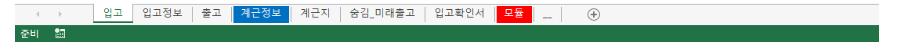※ "입고" 시트 구성 [입고내역을 저장해둡니다]

※ "입고확인서" 시트 구성 및 입고확인서 작성법
A. 입고시트에서 입고확인서 작성할 목록의 셀을 선택한다. 8개 행 이상일때는 8개까지만 표시됨.
B. "입고시트"에서 "입고확인서 작성" 글상자를 클릭하면,
A.의 선택행을 따서 '입고확인서 시트 M열[선택행]에 기록하고
'입고' 시트를 참조하는 수식을 입고확인서 양식에 만들어준다.
▢ [중량계근 관련] 엑셀파일[파일명:삼성중량다시0925.xlsm] 기능 및 사용법 개요 (자세한 설명은 따로)
1. 영업프로그램에서 해당목록 선택
2. 중량계근내역서 ECXEL 파일로 변환
3. 삼성중량다시0925.xlsm 파일로 변환된 계근정보를 복사해서 붙여넣기로 가져오기
4. EXCEL에서 중량계근내역서 작성
5. 중량계근표 출력(PDF파일로 내 컴퓨터에 저장해도 됨) 및 ★정보확인★
▢ [중량계근 관련] 엑셀파일[파일명:삼성중량다시0925.xlsm] 에 사용할 계근정보 준비 [자세한 설명]
1. 영업프로그램에서 해당목록 선택
▸ 메뉴에 접근 : 영업프로그램 - 수탁관리 - 출고/이고 관리 - 품목별 출고현황 조회/수정/삭제/출력
▸ 출고내역 조회 : (필요시) ① 조회조건 입력 - 검색 - ② (중량계근표 엑셀파일로 볼) 내역 선택 - ③ 계근현황 클릭
▸ 영업프로그램 계근표 엑셀파일 준비
※ 위에서 클릭하면 계근현황이 뜬다.
① "EXCEL로" 클릭하면 오른쪽 엑셀파일처럼 엑셀파일로 변환되어 켜진다
② 엑셀파일의 A:C열을 복사하여 [파일명:삼성중량다시0925.xlsm]에 붙여넣어 사용할 것이다.
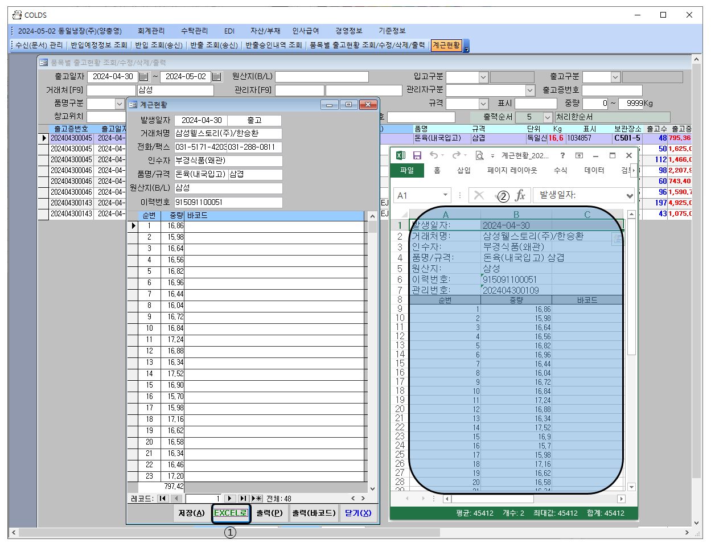▢ [중량계근 관련] 엑셀파일[파일명:삼성중량다시0925.xlsm] 에 사용법 [자세한 설명]
※ 엑셀파일[파일명:삼성중량다시0925.xlsm] 실행. 처음화면 [처음화면에는 A:C열이 비어있음 확인]
① "계근정보" 시트 선택
② 영업프로그램의 계근정보 엑셀파일의 A:C열을 복사 - "계근정보" 시트 A열 선택후 붙여넣기(CTRL + V)
③ 매크로 아이콘 클릭
클릭하였다면 A:C열이 E:G로 복사되고 A:C열이지워진다. 추가로 계근표 상자가 나타난다. 오차범위가 큰 것이 회색처리.
※ 입고 시트에 이력번호와 품명이 같은내역이 여러개 있는 경우는 선택상자가 뜹니다. 해당내역 선택하면 됩니다.
※ 중량이 맞게 기록되었다고 판단되면, "출고기록후 출력" 클릭.
※ 계근정보 시트 설명 : 매크로 아이콘 클릭후 기준.
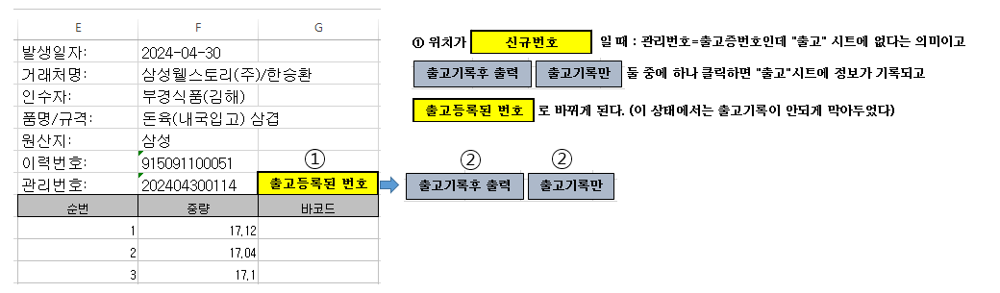▢ 중량계근내역서 E-MAIL 발송 (담당자 3명 전체메일로) 20251114현재(변동가능)
※ 담당자 e-mail : <mk895.jeon@samsung.com><hyoung22.kim@samsung.com><buk17713@hanmail.net>
▢ 삼성웰스토리 SRM 협력회사 지원시스템 로그인 - 계근정보 입력
1. 삼성웰스토리 SRM시스템 사이트 검색
2. 로그인 : https://srm.welstory.com/spligin.do id : 180111 , password : ? [차승환 과장 자리 컴퓨터에서]
※ 로그인 후 팝업 닫기
3. ① 임가공관리 - ② 출고승인관리
4. ① 출고요청일자 지정 (당일에서 당일로 조회하면 될 듯), ② 조회 클릭
③ 전체선택 (해당없는것도 선택될 수 있음), 개별적으로 선택하려면 ④ 번 방법으로.
④ ⑤ 번에 중량을 기록할 내역에 클릭!! 체크표시 확인
⑤ 해당셀 마다 클릭하여 중량 기록 (동일냉장 출고증이 여러장이라도 "증명서발급번호와 품명"이 같으면 합산하여 기록)
⑥ (중량 기록이 모두 완료되었다면) 출고확정요청 클릭
할당관세? 등의 물품에 대해서 내국물품반입신고번호 문의가 있었다.
내물물품반입신고는 월초(보통 1~5일 사이)에 일괄반입신고하고 있으며 일괄반입신고 시점에
내국물품 상태인 재고(목록1건이 모두 내국상태 기준, 통관물품 및 순수내국물품)를 내국물품반입신고합니다.
확인하려는 재고에 대한 자세한 정보는 내국물품반입신고번호만으로는 확인이 안되며
세관 등에서 실제 확인요청시 창고에서 재고확인서(내국물품반입신고번호와 함께) 출력하여 확인가능합니다.
내국물품번호 함께나오는 출력물이 없음. 재고내역을 EXCEL로 변환하면 나오는데 편집하여야야 합니다.
1. 입고내역 맨우측 내국물품번호는 세관에 전송한 내국물품반입신호번호가 아님!!!
• 입고내역 맨우측 내국물품번호는 내국물품반입신고 날짜 참고용으로 활용가능
• 입고내역 맨우측 내국물품번호는 이체가 없었거나 이체 전에 내국반입시 번호가 부여됨
• 이체후 반입시 이체건에 번호부여되어 입고내역에서 확인 안됨
• 이체가 여러날에 걸쳐 복수 인 경우 다른 번호로 잡힘
2. 재고현황에서 확인되는 세관에 신고된 내국물품 반입번호 형식 : 24-12345678 (년도, 8자리)
3. 세관에 신고된 내국물품 반입번호 전체번호는 03011597 을 앞에 추가해야 함
• 세관에 신고된 내국물품 반입번호 형식 : 03011597-24-12345678 (고유번호, 년도, 8자리)
• 030 은 부산본부세관 고유번호, 11597 은 동일냉장 고유번호
4. 세관에 신고된 내국물품반입번호는 재고현황에서 재고 클릭 후 하단에서 확인 가능
• 해당 내국물품 번호의 모든 내역을 보려면, 내국물품번호 확인후 재고조회에서 내국물품 번호 넣고 조회하면 됩니다.
5. 세관에 신고된 내국물품반입번호는 재고현황을 EXCEL로 변환시 확인 가능
▢ 출입자일보에 입고일자 누락시 등의 경우 검품정보 전산에서 확인방법
1. 메뉴에 접근 : 수탁관리 - 재고 관리 - 검품증 발급내역 조회_출력

2. 날짜지정후 검색 - 상단 조회결과 항목 클릭시 아래에 물품정보 표시됨
1. 메뉴에 접근 : 기준정보 - 코드관리 - 즐겨찾기메뉴 등록
2. 즐겨찾기 등록된 메뉴 삭제방법
2. 즐겨찾기 등록 방법
1. 메뉴에 접근 : 수탁관리 - 입고관리 - 수탁물과 EDI자료 연결작업
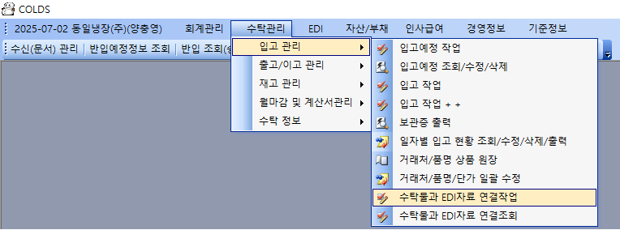2. 처음화면 (별개 정보로, "미통관" 글자는 "거래처/품명별 재고 현황" 에서 수정이 된다. 내국으로 잡히는지는 모르겠다.)
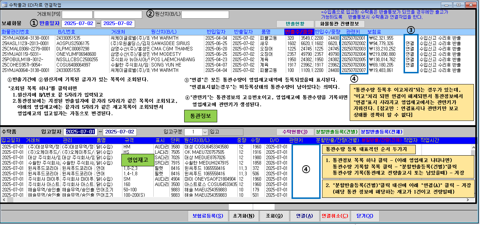3. 등록케이스1 : 통관정보클릭 - 영업재고 1건 클릭 - 분할반출등록(건별) 클릭 - 통관수량 기록 - 저장
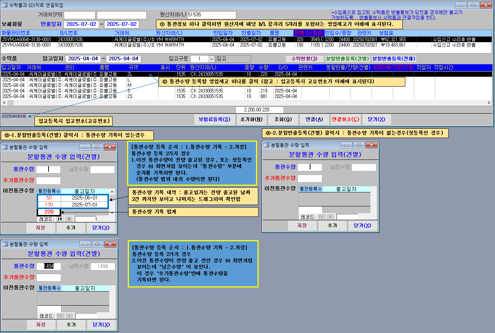4. 등록케이스2(연결(A)) : 통관정보클릭 - 영업재고 1건또는 여러건(드래그) 클릭 - 연결(A) 클릭
[연결(A)는 선택한 영업재고에 통관수량 기록을 자동(전량으로 기록)한다] ??
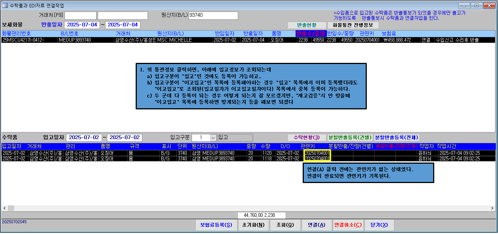※ 통관정보 중에서 영업재고에 연결 전인 것만 조회하는 기능이 없다.
5. 연결(A) 해본 결과 메모
1. 통관수량과 아래 선택된 수량이 일치하지 않는다고 하는데, 아래 수량은 입고시 수량이므로 반출등록이 있었다면 등록할수 있는 재고수량이 모자라게 된다.
이런 이유 등으로, 안맞는다는 "메세지"가 뜨는데 무시하고 진행하면 된다.
[여러건 드래그시 : 1.아래에 총 합계수량 나옴. 2.다른 B/L목록이 섞여 있으면 "연결(A)" 클릭해도 연결이 안됨(막아준다고함)]
2. 연결(A)는 전량통관일때 편리하다? 별도의 확인 메세지 없이 연결이 완료된다.
★ 입고시 정보로 등록, 이고정보로 등록 : 중복 가능 (재고검증시 안맏으면 이 부분도 확인)
영업재고 원산지부분에 "화주 띄우고 BL번호" 규칙에서 "띄우기"가 없는 경우,
B/L번호추출(엑셀) 안되기 때문에 원산지 부분만 수정하는 용도이다.
1. 메뉴에 접근 : 수탁관리 - 재고 관리 - 거래처/품명별 재고 현황
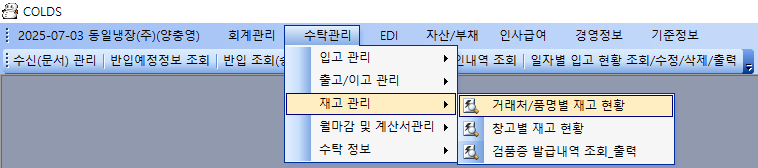2. 조회 : (필요시) 원산지에 조회조건 지정 - 검색
3. 목록선택 (▶ 표시됨) - 수정 클릭 - (선박명부분이 원산지 부분이다) 수정 - 확인(A)
※ 수정 클릭 대신에 "통관여부수정" 클릭하면 통관여부 수정이 가능하다.
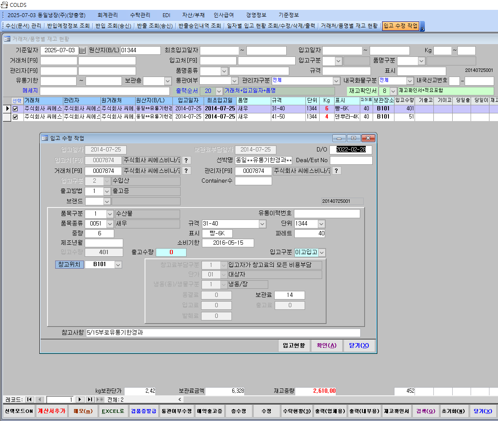▢ (제목) 중량기록 방법, 어플깔기, 수정, 출력, EXCEL활용, 삼성웰스토리
1. 영업프로그램에서 해당 출고내역 선택 후 직접 입력하는 방법
2. 외부(현장)에서 휴대폰 어플을 활용하여 입력 후, 영업프로그램으로 전송
※ 구글플레이스토어에서 휴대폰 어플을 깔면 현장에서 중량기록 및 데이터전송 할 수 있습니다.
3. 수정은 영업프로그램에서 합니다.
4. 엑셀 파일로 변환하여 활용할 수 있습니다.
5. 삼성웰스토리는 "SRM 협력회사 지원시스템" https://srm.welstory.com/splogin.do 에 로그인하여
계근중량을 기록하여야하며, 중량계근지를 담당자(3명)에게 e-mail 발송 해줍니다. 20251114현재(변동가능)
※ 담당자 e-mail : <mk895.jeon@samsung.com><hyoung22.kim@samsung.com><buk17713@hanmail.net>
▢ (자세히) 영업프로그램에서 해당 출고내역 선택 후 직접 입력하는 방법
1. 메뉴에 접근 : 수탁관리 - 출고/이고 관리 - 품목별 출고현황 조회/수정/삭제/출력 -- 출고조회 폼이 뜹니다.
2. 출고목록 조회 (삼성웰스토리 축산물의 경우 '내국입고'로 조회하면 해당항목만 볼 수 있음)
① 출고일자 지정 및 확인, ② (필요시) 조회 조건 입력, ③ 검색(Q) 클릭,
④ 목록 선택(클릭), ⑤ 계근현황 클릭 -- 계근현황 폼이 뜹니다.
3. 계근현황 폼에서 중량 입력 및 메뉴 사용 설명
※ 하나 삭제 : 선택(▶) - delete - 저장 (순번이 줄어드는게 아니고, 영업에는 마지막 순번이 찍힌다. 참고.).
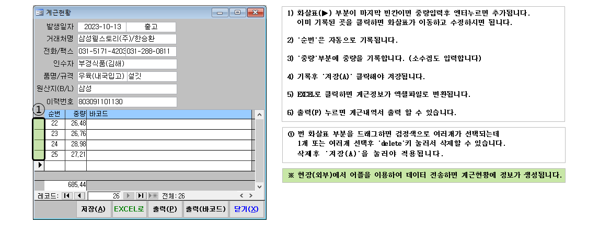▢ (자세히) 중량체크 어플깔고 셑팅하기, 사용방법
1. 어플깔고 셑팅하기
A. 휴대폰에 프로그램 설치 : 구글플레이에서 "미래소프트 계근프로그램" 검색 (아이콘 : )
B. 실행하기 (셑팅 한번만 : id, 패스워드, 서버주소, 포트) : 셑팅후 접속하면 됩니다.
[출고지시서에서 관리번호 위치]
C. 접속후 초기화면
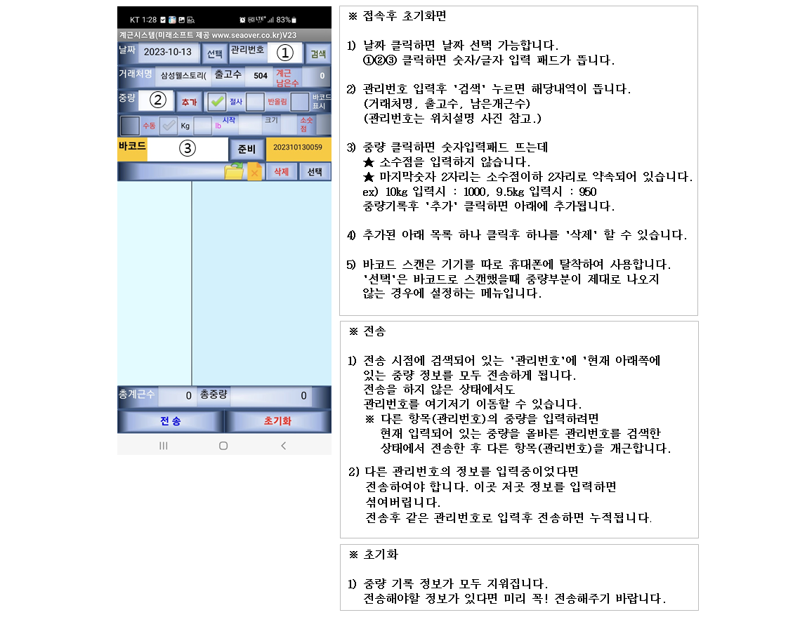D. 참고화면, 바코드 중량설정 화면(자동 설정 안될때)
▢ 부산 본부세관 고유 부호 : 030, 동일냉장 고유 부호 : 11597
▢ 부산 본부세관 인터넷 검색하여 사이트 방문 (여기서는 우측 밝은색 조직도와 직원안내만 봅니다.)
1. 조직도 (우측 끝) "세관소개" => 조직 및 직원안내 => 조직도. (주로 연락하는 부서는 감시국 => "수출입물류과")
2. "감시국" 클릭했을때 나오는 분장업무중 "수출입물류과"의 분장업무들 "확인"
ㆍ보세구역의 지정 및 특허와 보세화물의 관리
ㆍ자유무역지역 및 종합보세구역의 관리
ㆍ수출입화물의 보관·운송 및 물류의 개선
ㆍ보세구역운영인·운송업자의 자율적 법규준수도의 측정 및 관리
ㆍ장치기간경과화물·몰수품 및 국고귀속물품의 관리·공매예정가격의 산출 및 매각
ㆍ외국인투자에 대한 통관지원
ㆍ권역내 세관의 통관업무에 대한 지도·감독
ㆍ통관에 관한 정보의 수집과 종합관리
ㆍ남북한 왕래자에 대한 휴대품검사 및 남북교역물품의 반출입관리
ㆍ기타 국내 다른 과의 주관에 속하지 아니하는 사항
3. 조직도 (우측 끝) "세관소개" => 조직 및 직원안내 => 직원안내 (★ 중요 ★)
4. 수출입물류과 담당업무 설명 (메인)
※ 특히 반출입관리는 반입물품 이상보고, 반입정정, 반출정정 업무가 빈번합니다.
▢ 유니패스(UNIPASS)
"다양한 관세 서비스를 통합"한다는 뜻의 UNI와 "전자시스템으로 원스톱 처리"한다는
뜻의 pass를 합친 말입니다.
유니패스는 물품의 수출입 신고, 세금 납부, 화물 검사 등 통관 절차를 전산시스템으로 자동화한 것으로
따로 세관을 방문하거나 서류를 작성할 필요 없이 인터넷을 통해 처리해주는 시스템입니다
▢ UNIPASS를 통해서 전자문서 제출하는 업무들 예시.
A. 보세화물의 반출입신고, 반출입신고의 정정 및 취소 신청, 반입물품 이상보고 등
▸ 미래소프트 보세관리 프로그램은 유니패스의 문서들을 땡겨와서 보여주는 것입니다.
▸ 보세관리 프로그램이 오류 등으로 세관의 문서를 땡겨오지 못하여 발생하는 신고누락 등의 책임은
전적으로 창고에 있습니다.
▸ 송신=문서제출이고 그 결과를 알려줍니다. 접수=접수, 오류통보=무효입니다.
▸ 승인통보, 체화통고 등 다양한 정보를 알려줍니다.
1. UNIPASS 로그인 방법, ID:go4323, password:!dongil3368, 공인인증서password:dongil3368
주소 : https://unipass.customs.go.kr/csp/index.do
가. 로그인 방법 : 사이트방문 - ① 로그인 클릭

나. 로그인방법 : 공인인증서 화면 전까지 ① ② ③ ④
다. 로그인 방법 : 공인인증서 화면 ① ② ③ ④

2. (로그인 후) 공인인증서 등록. 창고 보세프로그램도 같은 공인인증서를 사용합니다.

3. 화물조회 (수입화물진행정보 확인방법)
1. (로그인 안해도 상관없음) 유니패스 - 관세청 사이트 방문
2. "화물진행정보조회 메뉴"에서 ① Master B/L 번호 또는 House B/L 번호 입력 후 조회

3. 조회결과화면 예시
1. (공인인증서 로그인 후) 문서함에서 문서 재수신 방법
① My메뉴 클릭, ② 문서함 사용관리 클릭, ③ 수신문서함 클릭, ④ 수신현황 클릭, ⑤ 수신기간 설정,
⑥조회 클릭, ⑦ 재수신 받을 문서 선택, ⑧ 재수신 클릭, ⑨ 재수신 처리하시겠습니까? 확인 클릭,
⑩ 정상적으로 처리되었습니다. 확인 클릭, ⑪ 보세프로그램에서 수신하면 다시 수신됩니다.

2. 보세화물 재고, 내국화물 재고 다운로드 (재고조사할때 이 자료와 일치해야 합니다.)
▢ (공인인증서 로그인 후) 보세구역 재고현황 다운로드

▢ (공인인증서 로그인 후) 내국물품 반출입 재고현황 다운로드


▢ 특허보세구역과 자율관리보세구역
1. 자율관리보세구역이란 특허보세구역을 운영하는 업체가
가. 보세화물관리를 위한 보세사 채용.
나. 화물의 반출입, 재고관리 등 실시간 물품관리가 가능한 전산시스템(WMS, ERP EMD) 구비.
다. 운영인 등의 법규수행능력이 우수하여 보세구역 자율관리에 지장이 없다고 판단되는 업체를
자율관리보세구역으로 세관이 지정할 수 있다.
※ 특허보세구역의 법규수행능력평가 점수가 3년평균 A등급이상을 유지하는 업체
2. 자율관리보세구역 혜택
※자율관리 보세구역 운영에 관한 고시 제7조(절차생략 등)
가. 식품위생법 제10조, 축산물 위생관리법 제6조에 따른 표시작업(원산지표시 제외) 할때 보수작업 신청(승인) 생략.
▸ 예 ) 축산물 입고시 한글스티커 부착작업 할 때 보수작업의 신청(승인) 없이 자율적으로 할 수 있습니다.
▸ 예 ) 다른식품도 한글스티커 작업할때 자율적으로 하는 부분들입니다.
단, ★원산지 표시가 누락되었을 경우에 원산지를 표시하는 작업은 보수작업 신청(승인) 받아야 됩니다.
★보수작업 대장 작성, 보수작업 완료보고서 제출, 작업 전 후 사진 등록 등 하여야 합니다.
나. 보세화물 관리에 관한 고시 제16조에 따른 재고조사 및 보고의무를 분기별 1회에서 년 1회로 완화
※ 특허보세구역 운영상황의 보고 기한이 다가오면 세관에서 공문을 보내주는데 요구서류에
재고조사보고서 등을 요청하는데 이것이 그 1회보고가 됩니다.
요청을 안하면 직접 보고해야 합니다. 운영상황의 보고 공문 도착시 이부분을 확인하고,
법령에 정한 보고사항 등의 체크리스트에 체크해 놓습니다.
★ 또한 운영상황의 보고 날짜는 법규수행능력평가때 날짜를 기재하므로 체크해 두어야 합니다.
다. 특허보세구역 운영에 관한 고시 제22조에 따른 보세구역 운영상황의 점검생략
▸ 특허보세구역 운영에 관한 고시 제20조(보세구역 운영상황의 보고)를 2월말까지 하는데,
그 보고내용이 일치하는지와 운영상황에 문제가 없는지 방문조사하게 되어있는데 생략한다는 것입니다.
라. 보세화물 관리에 관한 고시 제17조에 따른 장치물품 수입신고 전 확인신청(승인) 생략
▸ 화주 등이 물품 반입시 검품 등을 할때 '장치물품의 수입신고 전 확인신청(승인)'을 받아야
물품을 볼 수 있는데 그 신청(승인)을 생략한다는 것입니다.
★ 그러나 그 물품을 '장치물품 수입신고 전 확인대장'에 기록관리는 해야합니다.
▢ 특허보세구역 운영에 관한 고시 제16조(특허장의 게시 등)
① 운영인은 보세구역 내 일정한 장소에 다음 각 호의 사항을 게시하여야 한다.
가. 별지 제2호서식의 특허장
나. 보관요율(자가용보세창고는 제외한다) 및 보관규칙
다. 화재보험요율
라. 자율관리보세구역지정서
마. 위험물품장치허가증 등 관계 행정기관의 장의 허가, 승인 또는 등록증
(위험물품, 식품류를 보관하는 보세구역에 한정한다)
② 운영인은 보세구역 입구에 별표 1과 같은 간판을 게시하고 민원인출입구, 울타리 등 필요한 장소에
별표 2와 같은 안내문을 게시하여야 한다.
▢ 문서수신, EDI(Electronic Data Interchange) : 전자문서교환, 보세화물 관련 문서입니다.
세관에서 동일냉장으로 보낸 문서는 UNIPASS 문서함에 있고, 창고업무의 편리를 위하여
보세프로그램 제공업체의 프로그램으로 문서함의 정보를 땡겨오는 형식입니다.
어떤 이유로 중요한 문서가 수신되지 않아서 처리하지 못하여 발생한 책임은 창고에 있습니다.
1. 메뉴에 접근 : EDI - 수신문서관리 - 수신(문서) 관리
2. 문서수신
화면설명 ① : 모든 수신된 문서의 제목입니다.
화면설명 ② : 수신된 문서 중에 접수와 오류에 관계된 문서만 보여줍니다.
화면설명 ③ : 반입과 반출관련 기능들도 여기에서 수행할 수 있습니다.
문서수신 ④ : 수신/변환/수정(R) 클릭
문서수신 ⑤ : 확인 클릭
▢ 문서의 종류
▢ 반입예정정보 보는법 : EDI - 보세화물관리 - 반입예정정보 조회
A. 수신일자 : 세관에서의 수신일자, 화주명과 B/L등은 세부조회 조건입니다.
B. 조회조건 - 전체 : 수신받은 모든 반입예정 정보
조회조건 - 반입예정품 : 반입등록을 하지 않은 정보 (★반입등록 용도로, 기본으로 이곳을 설정해 놓습니다.)
조회조건 - 반입품 : 반입등록을 한 정보
조회조건 - 반입취소건 : 반입등록을 하였다가 반입취소한 것
▢ 보세화물 반입등록
1. 반입등록화면 설명 : EDI - 보세화물관리 - 반입 등록
A. 반입등록 화면 자체로는 거의 쓸 일이 없습니다. 내용을 모두 직접 기재해야 합니다.
2. 반입등록 과정 이해
A. 반입예정정보가 수신되면 해당 메뉴로 정보가 들어가게 됩니다.
이 경우 반입예정정보 화면에서 반입등록을 할 수 있습니다. 반입등록에 필요한 대부분의
정보가 자동 셑팅되고 화주, 품명, 장치장소 등 일부만 입력하면 됩니다.
B. 반입예정정보에서 해당정보가 반입등록이 되면 반입등록 정보는 반입조회(송신) 메뉴에 새롭게 생성됩니다.
반입예정정보에서 없어지는 것이 아니고 각각 별도로 관리됩니다.
보통 반입예정정보에서는 반입등록 전(★반입예정품)인 것만 보게하도록 설정합니다.
C. 반입예정정보가 없는 '관리화물'등의 경우는 '반입 등록(수기)' 메뉴에서
화물을 조회하여 대부부의 기본사항을 자동 셑팅하여 반입등록정보를 생성합니다.
※ 반입 등록(수기) 사용 예 : EDI - 보세화물관리 - 반입 등록(수기)
※ 조회가 된다면 이후 과정은 반입예정정보에서 반입등록하는 것과 같습니다.
3. 반입등록 방법 (반입예정정보 메뉴에서 반입등록)
A. 메뉴에 접근 : EDI - 보세화물관리 - 반입예정정보조회
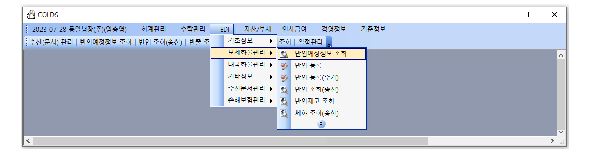B. 메뉴에 접근 : ① 반입등록 정보 선택, ② 반입등록 클릭.
C. 정보 입력
① 화주입력 : 셀클릭후 F9키 누르면 화주폼이 뜹니다. (셀 클릭 안하면 마지막에 정보가 안들어감)
② 품명 선택 : 눌러서 품명 분류 선택하고 우측에 세부품명 적기
③ '고내'라고 입력
④ 컨테이너 대수 확인 (공란인 경우가 간혹 있음)
⑤ 이상이 없는 경우는, ③ 이후 엔터 3번치면 적하목록과 같은 정보로 입력됩니다.
⑥ 등록 : 반입조회 송신 메뉴에 정보가 생성됨. 정보의 송수신은 반입조회 송신메뉴에서 합니다.
4. 반입등록한 정보 송신, 수신, 수신내역 확인
A. 메뉴에 접근 : EDI - 보세화물관리 - 반입 조회(송신)
B. 송신
※ 전송선택은 '부분선택'으로 놓고 사용하겠습니다. '전체선택'은 모든 내역이 선택됩니다.
① 부분을 클릭하면 체크표시가 됩니다. 한번 더 누르면 체크해제 표시됩니다. (여러개 선택됩니다.)
② 전송준비(F) 클릭
③ (반입전송준비) 확인(A) 클릭
▸ (반입전송준비) 확인(A) 클릭하면 ③ 전송준비(F)가 흐릿하게 되고 ④ 전송(T)가 활성화됩니다.
④ 확인 클릭 (전송준비가 완료되었다는 메세지)
⑤ 전송(T) 클릭
⑥ 확인 클릭. 전송되면 목록에서 사라집니다. 조회조건 전체로 하면 볼 수 있습니다.
C. 수신하여 송신정보의 결과 확인 (접수통보인지 확인, 오류통보이면 무효입니다.)
※ 보세프로그램으로 세관 유니패스 문서 수신하기 참고
5. 관리화물, 입항반입 등 반입예정정보에 없는 경우 반입등록시 유의사항
등록하면 예정정보와 반입조회송신 두군데 다 생성됩니다.
예정정보에는 수신일이 기본값인 하루전으로 등록되어서 하루전으로 조회해야되고,
이미 반입등록처리되었으므로 전체보기로 조회해야됩니다.
반입조회송신에서는 입항일자로 조회됩니다.
반입조회송신으로 넘어가면 입항반입이 보세운송반입으로 바뀌는 경우가 있으니 꼭!! 확인하시고
하선신고로 들어오는 경우 입항반입이므로 입항반입으로 해야합니다.
6. 관리화물, 입항반입 등 반입예정정보에 없는 경우 반입등록 방법
A. 메뉴에 접근 : EDI - 보세화물관리 - 반입 등록(수기)
B. 반입등록(수기) 메뉴로 반입등록 방법 (등록이 완료되면 반입예정정보에 정보가 생성됩니다.)
이 건을 반입등록할때 "입항반입"으로 하였어도 보세운송반입으로 바뀌는 경우가 있으니 꼭!! 확인.
① 적화목록 불러오기(Q) 클릭
② 조회하려는 번호에 체크하고 (Master B/L기준) 정보 넣고
③ 검색(Q) 클릭하면, 기본정보가 폼으로 들어갑니다.
이후는 반입등록 방법과 같이 화주, 품명, 보관층, 수량, 중량 입력한 후에
④ 등록 클릭
⑤ 예 클릭 (저장할지 확인 메세지)
⑥ 확인 클릭 (작업완료 메세지)
▢ 반출승인 물품은 '반출전에 반출신고'라 하였는데..
※ 금요일 오전에 폐기물품 반출한다고 연락받아서 세관업무때문에 세관에 가면서 반출승인 내역대로 반출을 떨었는데
그날 반출을 하지 않고, 다음주 화요일에 반출된 경우가 있었는데 세관에서 연락이와서
너무 빨리 떨었다...고 함. 보세구역에서 반출신고되면 다음보세구역으로 이동시간이 계산되는듯??
※ cy로 가는 경우는 한시간만 늦어도 cy에서 반입이 먼저 잡히면 지연반출이 되어버리므로
물품을 싣고 있는것을 확인되었거나, 출발즉시 반출신고를 하여야 하겠습니다.
※ 퇴근시간 즘에 싣는 경우, 다음날 출근시간 이후 회수하는 경우는 다음날 아침에 반출신고?? 회수확인이 필요함.
▢ 수입신고 수리후 반출승인 물품에 대해서
※ 수입신고 수리후 반출 : 통관 완료 되었으니 반출해도 된다는 내용.
※ '수입신고 수리후 반출'을 제외한 다른 반출승인 유형은 보세화물 상태로 이동하는 것입니다.
1. 2000개의 물품에 대해서 수입신고 수리후 반출승인이 되었다면
▸ 원칙적으로 '반출전 반출신고'라는 의미가 출고할 때마다 출고하는 수량만큼만 반출신고하고
출고하라는 것인데 실무적으로 어렵기 때문에 '수입신고 수리후 반출승인'의 경우에는
그때그때 바로 전량 반출신고를 합니다.
▸ 이 경우 반출신고한 물품은 '내국물품반입신고'하여 '내국물품으로 관리'합니다.
2. 2000개의 물품에 대해서 반출승인 정보를 수신하지 못하여 인지하지 못하고 있다면?
▸ 출고의뢰가 있다면 보세물품인지 확인을 반드시 하기 때문에 출고의뢰 시점에서 확인이 됩니다.
문서를 재수신하여 반출신고 하거나, 1개월지 지난 문서는 재수신이 되지 않기 때문에
유니패스를 통해서 직접 반출신고를 하면 됩니다.
3. 2.의 경우 출고의뢰가 없이 시간이 흐른다면 '수입신고 수리후 반출'은 6개월 이내에 반출신고를 하여야 합니다.
※ 안전하게 1년에 3번 정도는 이런 물품이 있는지 확인하여야 합니다.
보세화물 재고목록을 일일이 클릭하여 확인하면 됩니다.
▢ 반출승인 유형
※ 모든 반출승인 문서의 제목은 '반출승인'이지만 반출신고 화면에서는 더 자세한 승인유형이 표시됩니다.
※ 수입신고 수리후 반출 : 통관 완료 되었으니 반출해도 된다는 내용.
반출신고를 하면(해야지) 내국화물 상태가 됩니다.
※ '수입신고 수리후 반출'을 제외하면 모두 보세화물 상태로 반출되는 것입니다.
전산상으로는 같은 과정이지만 유형별로 반출시기 및 확인사항을 숙지하여야 합니다.
1. 수입신고 수리후 반출 : 통관 완료 되었으니 반출해도 된다는 내용.
2. 멸각폐기 반출 : 통관하지 않고 물품을 폐기하는 장소로 보세화물 상태로 반출되는 경우. (식품검사 불합격 등)
3. 반송화물 반출 : 통관하지 않고 물품을 외국으로 반출하는 경우
4. 보세운송 반출 : 단순히 보세구역간의 이동 (보관창고를 바꾸거나 현재 보관창고에서 수입검사가 안되는 경우 등)
▢ 반출신고 등록 방법 : 수입신고 수리후 반출을 예로 보겠습니다. 전산상으로는 모두 같습니다.
1. 메뉴에 접근 : EDI - 보세화물관리 - 반출승인내역 조회
2. 반출신고 등록 : ① 반출신고할 정보 선택, ② 반입등록(A) 클릭, 새로운 창이 뜹니다,
③ 등록(A) 클릭, ④ 예(Y)클릭, ⑤ 확인 클릭, ⑥닫기(X) 클릭
※ 등록한 정보는 '반출 조회(송신)' 메뉴에 생성되었습니다.
※ 지금 화면에서는 검색하면 사라집니다. 반복작업후 송신하려면.
⑦ 조회(송신)(S) 클릭하면 바로 갑니다.
▢ 반출신고 등록 내역 송신
1. 메뉴에 접근 : EDI - 보세화물관리 - 반출 조회(송신)
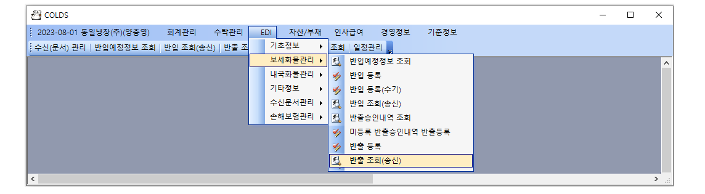2. 송신 : ① 전체내역은 30개씩 선택되고, 부분선택은 ② 선택상자 네모 클릭하면 체크 또는 체크해제 됩니다.
③ 전송준비(F)) 클릭, ④ 확인(A) 클릭, ⑤ 확인 클릭, ⑥ 전송(T) 클릭, ⑦ 예(Y)) 클릭
3. 수신문서 메뉴에서 문서를 수신받아 결과를 확인합니다.
▢ ★ 삭제 등 오류처리 방법 ★
● 반출승인내역 관련 메뉴 : ① 반출승인내역 조회 ② 반출 조회(송신)
▸ ② 반출 조회(송신)은 송수신 기능만 있음. 반출취소와 삭제는 반출승인내역 조회에서
● 반출승인내역 조회, 반출 조회(송신) 처리과정
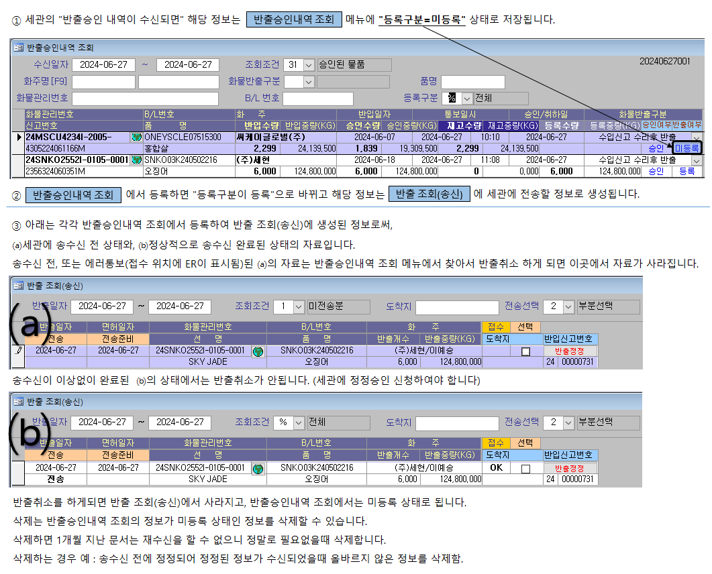● 반출승인내역 조회 메뉴에서
1. 반출취소 : 반출승인내역 조회 목록을 등록하여 반출 조회(송신)에 생성되어 송수신이 이루어지지 않은 목록에 대해서
반출 조회(송신)에서 삭제되며 반출승인내역 조회에서 미등록 상태로 됩니다.
2. 삭제 : 반출승인내역 조회 목록에서 미등록 상태의 목록을 삭제합니다.
▢ 내국물품 관련 법령 등
1. 관세법 제183조(보세창고)
① 보세창고에는 외국물품이나 통관을 하려는 물품을 장치한다.
② 운영인은 미리 세관장에게 신고를 하고 제1항에 따른 물품의 장치에 방해되지 아니하는 범위에서
보세창고에 내국물품을 장치할 수 있다.
다만, 동일한 보세창고에 장치되어 있는 동안 수입신고가 수리된 물품은 신고 없이 계속하여 장치할 수 있다.
③ 운영인은 보세창고에 1년(제2항 단서에 따른 물품은 6개월) 이상 계속하여
제2항에서 규정한 내국물품만을 장치하려면 세관장의 승인을 받아야 한다.
2. 관세법 제157조(물품의 반입.반출)
① 보세구역에 물품을 반입하거나 반출하려는 자는 '대통령령으로 정하는 바' 에 따라 세관장에게 신고하여야 한다.
② 제1항에 따라 보세구역에 물품을 반입하거나 반출하려는 경우에는 세관장은 세관공무원을 참여시킬 수 있으며,
세관공무원은 해당 물품을 검사할 수 있다.
③ 세관장은 보세구역에 반입할 수 있는 물품의 종류를 제한할 수 있다.
※ '대통령령으로 정하는 바' : 관세법 시행령 제176조(물품의 반출입신고)
2. 내국물품(수출신고가 수리된 물품을 포함한다)의 경우
가. 물품의 반입일시
나. 물품의 품명, 포장의 종류, 반입개수, 장치위치와 장치기간
3. 보세화물관리에관한고시 제12조(보세창고 내국화물반출입신고 등)
① 운영인이 법 제183조제2항 및 「관세법 시행령」(이하 "영"이라 한다) 제197조에 따라 보세창고의 일정구역에
일정기간 동안 내국물품을 반복적으로 장치하려는 경우 세관장은 외국물품의 장치 및 세관감시단속에 지장이 없다고
인정하는 때에는 보관장소, 내국물품의 종류, 기간 등에 대해 이를 포괄적으로 허용할 수 있다.
② 법 제157조제1항 및 영 제176조에 따라 보세창고에 내국물품을 반출입하려는 자는 반출입 전에
별지 제11호서식 및 별지 제12호서식의 내국물품반출입신고서를 세관장에게 전자문서로 제출하여야 하며, 이 경우
반입신고에 대해서는 법 제183조제2항 및 영 제197조제1항에 따른 내국물품장치신고(별지 제13호서식)로 갈음한다.
③ 제2항에 따라 반출입신고를 접수한 세관장은 반출입신고수리필증을 교부하지 아니한다.
다만, 반출입시 세관공무원을 입회시킬 수 있으며 세관 공무원은 해당 물품에 대하여 검사할 수 있다.
④ 법 제183조제3항 및 영 제197조제2항과 제3항에 따라 1년 이상 계속하여 내국물품만을 장치하려는 자는
별지 제14호서식의 내국물품장치승인(신청)서를 제출하여 세관장의 승인을 받아야 한다.(개정 `14.12.10.)
⑤ 제2항과 제3항에도 불구하고 세관장은 제4항에 따른 승인을 얻어 장치하는 물품에 대하여
대장관리 등 기록유지가 되는 경우에는 해당물품의 반출입신고를 생략하게 할 수 있다.(개정 `14.12.10.)
⑥ 법 제177조제1항제1호나목에 따른 내국물품의 장치기간은 1년으로 한다.
다만, 법 제183조제2항 단서에 따른 수입신고수리물품의 장치기간은 6개월로 하며,
이 경우 세관장이 필요하다고 인정한 때에는 수입신고수리일부터 1년의 범위에서 별지 제15호서식의
반출기간연장승인(신청)서에 따른 세관장의 승인을 받아 그 장치기간을 연장할 수 있다.
▢ 내국물품 내용 정리
1. 내국물품 장치신고 : 관세법 제183조 ②항
▸ 장치신고의무 위반시 과태료 : 1차 25만원, 2차 50만원, 3차이상 100만원
▸ 보세화물로 반입되어 수입신고수리된 물품은 장치신고를 하지않고 장치할 수 있다.
6개월까지 장치할 수 있다. 연장신청하고 승인받으면 6개월 더 연장가능.
▸ 내국화물(내국물품 상태로 반입되는 물품, 타 창고에서 수입신고수리된 물품 포함)을
장치(반입)하려면 장치신고후 세관의 승인을 받아야 한다.
장치신고가 승인을 받으면 반입하고 반입신고, 반출하면서 반출신고한다.
장치기간은 1년이다.
2. 자율관리보세구역은 내국물품반출입관리대장을 관리하는 경우 반출입신고 생략은 가능하나 장치신고는 하여야 한다.
▸ 내국물품반출입관리대장을 관리한다는 말은 실무적으로 반출입신고로 관리한다는 말과 같습니다.
▸ 장치신고는 하여야한다는 말은
보세화물관리에관한고시 제12조(보세창고 내국화물반출입신고 등) 제 ②항에서
반입신고를 장치신고로 갈음한다고 되어있기 때문에 장치신고만 따로 하는 방법은 없다고 봐야하겠습니다.
3. 결론은
▸ 내국물품은 반입신고를 하면, 장치신고는 반입신고로 갈음한다고 하였기때문에 두가지가 동시에 됩니다.
★ 자율관리보세구역의 경우 장치.반입신고를 매월 말 기준 익월 1일에 일괄전송 가능이라고 하였으므로
반입 및 반출신고를 이 시기에 함께합니다.
▢ (전산)내국물품 반출입신고 순서. 반출신고 - 반입신고 순서 - 재고확인 순서
1. 내국물품 반출신고
▸ 메뉴에 접근 : EDI - 내국화물관리 -
▸ 반출신고 정보 생성
① 기준일자 지정 : 오늘이 8월 3일이면 8월 1일 (1일로 지정)
당일로 기준일자를 정하려면 모든 작업이 끝나고 작업해야 합니다.
(반출입이 일과시간내 꾸준히 이루어지기 때문입니다.)
② 구분을 '누적수탁출고건(미등록)' 선택
③ 검색(Q) 클릭, ④ 선택 클릭 (전체 선택됨, √ 표시 확인), ⑤ '누적수탁품출고가있는건 일괄반출등록' 클릭
⑥ 예(Y) 클릭 (일괄등록을 진행하시겠습니까?) ⑦ 확인 클릭 (정상적으로 완료되었습니다)
⑦ 확인 클릭하면, 반출등록 정보 송신 화면으로 이동합니다.
▸ (이어서) 반출신고 생성정보 송신
① 전송선택을 전체선택으로 합니다. (30개씩 선택됩니다)
송신되면 리스트에서 사라지고 새로운 정보 30개 선택됩니다.
② 전송준비(F) 클릭, ③ 확인(A) 클릭 (내국물품 반출전송준비)
④ 확인 클릭 (정상적으로 전송준비가 완료되었습니다.!)
⑤ 예(Y) 클릭 (내국반출물품자료 전송을 하시겠습니까?)
※ 송신 작업시간이 약간 걸립니다.
※ 송신할 자료가 보통 400~500건 되니 ② ~ ⑤ 를 반복합니다.
※ 송신이 완료되면 수신하여 오류통보가 있는지 확인해야합니다.
2. 내국물품 반입신고 (반드시!! 반출신고 이후 송수신 완료후에 해야합니다.)
※ 기준일자 입출고 완료후에 내국화물 상태인 재고를 반입자료 자동생성합니다.
▸ 메뉴에 접근 : EDI - 내국화물관리 - 내국물품 반입신고(수탁품 일괄 등록)
▸ 반입신고 정보 생성
① 기준일자 지정 : 반출신고할때 지정한 날짜와 같은 날짜로 지정 (1일)
② 검색(Q) 클릭 (목록생성 시간이 조금 있습니다.)
③ 수탁품 일괄 내국물품 등록하기 클릭
④ 새로운 화면에서 5가지 설정을 정확하게 하고, '등록(A)' 클릭
⑤ 예(Y) 클릭 (입력한 자료를 저장하시겠습니까)
※ 별도의 메세지 없이 자료가 저장되었습니다. '내국물품 반입조회(송신)' 메뉴에서 송신하면 됩니다.

▸ 반입신고 생성정보 송신
▸ 메뉴에 접근 : EDI - 내국화물관리 - 내국물품 반입신고(수탁품 일괄 등록)
▸ 내국물품 반입신고 생성정보 송신
① 반입일자 지정 : 반입등록일자의 정보가 조회됩니다.
② 전송선택을 '전체선택'으로 합니다. 30개씩 선택됩니다.
③ 전송준비(F) 클릭, ④ 확인(A) 클릭 (내국화물반입전송준비)
⑤ 확인 클릭 (정상적으로 전송준비가 완료되었습니다.)
⑥ 전송(T) 클릭, ⑦ 예(Y) 클릭 (내국물품반입자료 전송을 하시겠습니까)
※ 송신 작업시간이 약간 걸립니다.
※ 송신할 자료가 보통 100여건 되니 ③ ~ ⑦ 를 반복합니다.
※ 송신이 완료되면 수신하여 오류통보가 있는지 확인해야합니다.
▢ 오류처리 (주로 수신자료의 오류통보시 처리방법)
1. 반입송신자료의 오류통보수신 이유와 처리방법
a) 이런경우는 거의 없는듯, 오류통보 자료를 삭제합니다.
[삭제방법](자료수집중)
2. 반출송신자료의 오류통보수신 이유와 처리방법
a) 세관 재고 수량보다 초과하여 반출신고한 자료 (중량은 안 걸러지는 듯)
b) 재고가 0이 되는 신고자료인 경우 재고중량이 0 이 아닌 경우
[처리방법?삭제방법?](자료수집중)
▢ 위와 같이 내국화물 반출입신고를 하고 난 후에 검증 및 전산재고조사를 합니다.
특수한 상황에 대하여서는 '내국물품반출입신고 검증 및 전산재고조사' 참고
▢ 반출통고 누락 유의 (화주에 등기우편 보내는 것)

※ 전산으로 세관에 통보할때는 정확한 날짜에 전송하여야 하는데, 누락통보가 오지 않거나 수신받지 못하여
제 때에 전송을 못하고 몇 일 있다가 전송하면, 이것도 경고인지 파악 안됨.
▢ 보세화물 반입일로부터 5개월이 되면 화주에게 등기우편으로 체화통고서를 보내야합니다.
※ 날짜를 딱 맞추라는 이야기도 있지만 편의상 2주정도 앞에 2주간 통고대상을 모아서 등기우편을 보냅니다.
※ 프로그램에서 체화등록을 하면 체화통고서 출력할 수 있지만 전산등록 주소와 다를수 있으므로 엑셀활용법 참고
※ 통고서 사본과 등기우편 발송근거(영수증)을 편철하여 보관하여야 합니다.
▢ 체화등록시에는 현재 화주 확인하고 현재화주대로 변경후 등록합니다.
▢ 체화등록시에는 우편번호를 입력해야합니다. (없으면 오류통보)
▢ 세관에는 5개월이 되는 날에 맞춰서 체화통고(전자문서 송수신) 해야합니다.
※ 달력에 정확한 통고일자 체크해 두고 통고일에 전산통고(세관에 전송)합니다.
※ 체화일자가 쉬는 날이면 다음 근무일에 전송합니다.
※ 당일 9시 전후로 세관문서를 수신하면 '체화예정정보 누락통보/' 문서가 건별로 수신됩니다.(세관에서 알려줍니다)
※ '체화예정정보 누락통보/' 문서 클릭하면 아래에 화물관리번호 확인이 가능합니다.
※★ '체화예정정보 누락통보/' 문서만 100% 믿으면 안됩니다.
※ 체화일자 불일치시 오류통보가 수신되면 체화일자를 세관과 일치하게 수정하여 다시 송수신합니다.
▢ 순서1 : 전산 체화등록 ('체화일자수정' 할 때도 이 순서대로 하면 됩니다)
※ 체화일자를 수정해야하는 경우가 자주 있음. (세관에 등록된 체화일자와 다른 경우 오류통보가 수신되는데
이곳에서 전산 체화등록을 하면서 체화일자를 수정해서 등록하면 됩니다.)
※ 체화등록을 하면 송수신은 '체화 조회(송신)' 메뉴에서 합니다.
1. 메뉴에 접근 : EDI - 보세화물관리 - 반입재고조회 클릭 (보세화물 재고목록이 뜹니다.)

2. ① 자료선택, ② 체화통고등록(C) 클릭 (통고등록화면 뜹니다)
※ 반입일과 BL번호를 참고하여 찾습니다.
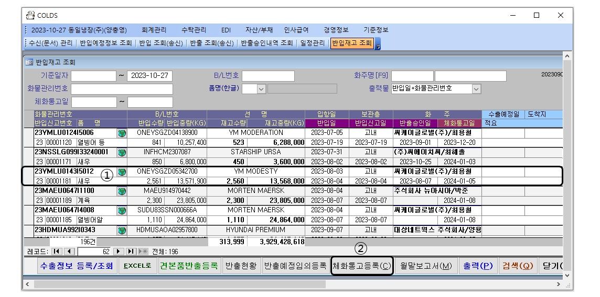3. 체화통고 등록 화면 (★ 등록하면 '체화 조회(송신)' 메뉴에 정보 생성됨)
① [재고조회에서 현재화주 확인] 화주는 확인해 둔 현재화주와 다르면 현재화주로 변경.
② 우편번호 없으면 넣어야 합니다. (없으면 오류통보 수신됩니다.)
③ '체화예정일자'가 안맞으면 나중에 송신하면 오류통보가 되는데,
이곳에서 새로 등록하면서 '체화일자'를 수정해주고 송신하면 됩니다.
★ 오류통보된 것은 송신된것으로 분류되므로 미전송분에는 안뜹니다. 조회조건을 '전체'로 하여야합니다.
④ 등록(A) 클릭, ⑤ 예(Y) 클릭, ⑥ 확인 클릭
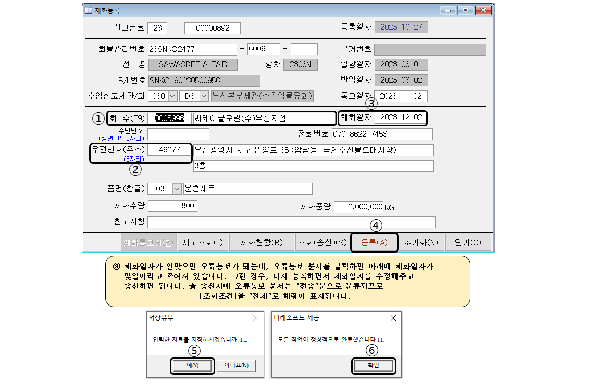▢ 순서2 : 전산 체화송수신 (오류통보시 '체화일자수정[체화통고 등록 다시]' 후 다시 송수신)
1. 메뉴에 접근 : EDI - 보세화물관리 - 체화 조회(송신)
※ 체화통고 등록된 내역이 이곳에 저장되어 있습니다. 송수신을 이곳에서 합니다.
2. 자료 송신
① 오류통보 건은 전송분으로 분류되므로 필요시 '전체'로 선택
② 통고일자 설정후 엔터치면 조회됩니다.
③ 전송할 항목 체크 (여러건 체크 가능)
④ 전송준비(F) 클릭, ⑤ 전송(T) 클릭, ⑥ 접수확인(O) 클릭하여 오류통보인지 정상처리인지 확인
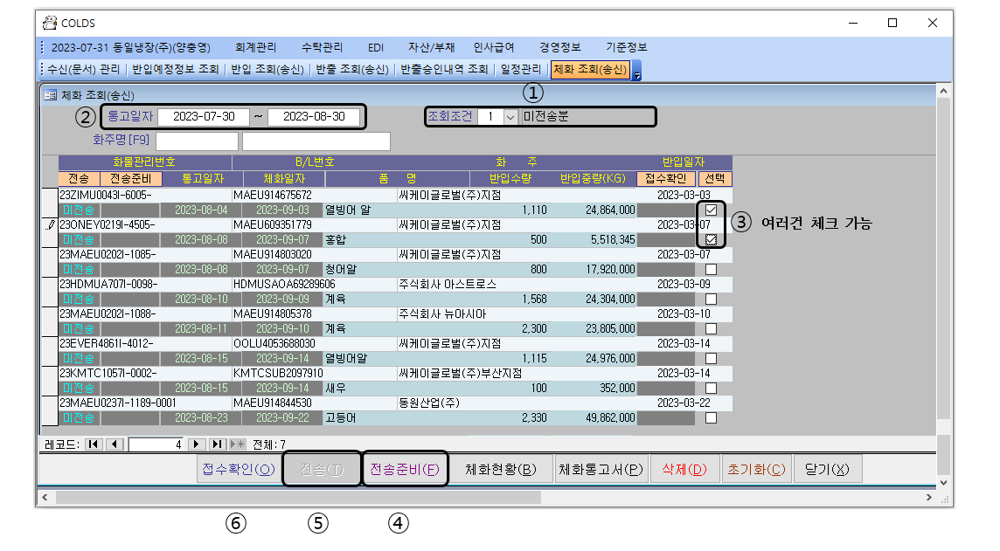▢ 오류통보 예시 (체화일자 확인)
▢ 통고서출력(프로그램에서)
[우편물 수령주소가 전산등록정보와 다른곳도 있어서 엑셀활용하고 있음]
1. 체화통고서 출력 (출력하려면 선택체크 해야하는데 송신되면 선택체크가 안됩니다.)
※ 선택 체크 안되면 업체주소와 정보등이 안나옵니다.
※ 체화통고 등록이 되어야 조회 및 송신이 가능합니다.
① 메뉴에 접근 : EDI - 보세화물관리 - 체화 조회(송신)
② 통고일자 설정후 엔터치면 조회됩니다.
③ 출력할 항목 체크 (여러건 체크 가능)
④ 체화통고서(P) 클릭 (출력화면으로 이동)
⑤ 인쇄 아이콘 누르면 출력됩니다.

▢ [세관 관련 업무] 통고서 보관, 등기우편 발송 영수증 보관
1. 출력한 체화통고서는 '직인 도장 찍고' 등기우편 발송 (총무부에 발송 부탁하면 됩니다.)
2. 체화통고서 복사본과 등기우편 발송 영수증을 보관합니다.
▢ 체화통고서 출력부분만 따로 엑셀 활용합니다.
※ 이유는 등기우편물을 받는 주소가 전산등록된 주소와 다른경우가 있어서 우편물이 반송되는 경우가 있습니다.
※ 우편물 수령 주소가 전산과 다른경우와 우편번호 누락된 화주 등 주로 발송하는 화주의 정보가 있습니다.
※ 영업프로그램에서 주소를 수정하고 출력하고 다시 원래대로 돌려놓는 방식이 비효율적이라서 엑셀을 활용합니다.
1. 엑셀 자료 준비
▢ 엑셀파일 준비 : 바탕화면 - 계산중심180130 - 파일옮김 - 1_통고서등 엑셀파일 열기 - 통고서 시트 선택
▢ 반입재고조회 : EDI - 보세화물관리 - 반입재고조회 클릭 (보세화물 재고목록이 뜹니다.)
① 'EXCEL로' 클릭, ② EXCEL화일로 변환하기! 클릭
③ 열린 재고파일에서 필요한 범위만 복사해서 (CTRL + C)
④ 1_통고서등 엑셀파일로 가서 O5셀에 붙여넣기 (O5셀 선택후 CTRL + V)
▢ 엑셀에서 반출통고서 출력
▢ 전자봉인 회수 30일 이내(택배/착불), 신항/북항 주소 및 연락처 : 여보세요24.6월호
※ 북항 : 우편번호 48548 부산광역시 남구 신선로325 지정장치장 2층 --- 문의(북항):010-8106-0144
※ 신항 : 우편번호 46757 부산광역시 강서구 녹산산단262로 14번길 53 --- 문의(신항):010-8106-0114
20250708 전자씰에 부착된 정보 : 택배주소가 장비에 기재되어 있는 주소인듯?
• 부산시 남구 신선로 325(용당동) 지정장치장 2층 (착불 지정택배사) 롯데/우체국/CJ
• 북항 : (051) 620-6516~6518, 신항 : (051) 620-6218~6219
▢ 관리화물에 부착된 전자SEAL해제 및 반입방법을 설명하기 전에
※ 화물진행정보에 '보세운송 검사대상'이라고 뜨고 전자seal이 부착된 경우가 있는데,
이것은 확인후 해제등록만 하면 탈거 후 작업이 가능하고,
※ 보세운송반출 화물이 '보세운송 검사대상'이 되면 전자seal이 부착될때까지 반출승인이 안납니다.
반송화물 반출 건이 '보세운송 검사대상'이 된 경우가 있었는데, 화물진행정보 상에
'반송 승인 신청'까지만 되어 있었고 물건을 싣고 전자씰 부착하시는 분이 창고에서 전자씰 부착후
씰부착 정보 전송후 반출승인이 되고 컨테이너 출발한 경우가 있었음.
※ 해제되어 탈거된 전자seal은 전자seal에 기록된 주소로 착불로 택배를 보내줍니다.
※ 전자SEAL 해제등록 방법은 관리화물 관련 작업방법에 나오는 설명과 같습니다.
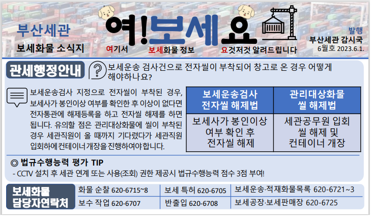▢ 관리화물 : 세관에서 직접 보려는 화물.
※ 랜덤이거나, 주로 제보가 있거나, 엑스레이상 의심물품을 직접 확인하기 위함입니다.
※ 관리화물은 세관이 직접 하선장소를 지정하는데 '하선신고로 반입되면 입항반입' 입니다.
하선신고는 보세운송처럼 창고에서 수신되는 반입예정정보에 뜨지 않기 때문에,
관리화물 등이 하선장소가 '동일냉장 보세구역'으로 지정이 되어 반입되는 경우에는
화주 등이 연락을 해줘야 알 수 있습니다.
※ 관리화물은 세관에서 직접 물품을 보겠다는 화물이므로
세관 직원의 입회 및 지시가 없이는 컨테이너 개봉금지입니다.
※ 하선신고 물품은 해상물품의 경우 3일이내(토,일 공휴일 등 노는날 제외???) 반입이 완료되어야 합니다.
(보세화물 입출항 하선 하기 및 적재에 관한 고시 제19조(하선장소 물품반입) 컨테이너화물 접안일로부터 3일이내 반입.)
※ 화주(관세사)에서 관리화물이 있다고 연락이 옵니다.
※ 세관담당자는 언제 작업할 것인지 시간조율 연락이 옵니다.
※ 전자seal이 부착되어 있으면 해제등록이 필요합니다.
▢ 관리화물 반입순서
※ 화물정보 확인 : B/L 팩킹등 정보가 화물진행정보와 일치하는지 확인 등
1) 운송스케쥴 확인하여 컨테이너가 언제 오는지 확인해놓기.
2) 세관에서 연락이 오면 작업시간 조율, 또는 관리화물 담당자에게 전화하여 작업일정 조율.
3) 세관 담당자에 제출할 서류 준비 : B/L, 팩킹리스트
4) 컨테이너 도착하면 전자봉인번호 확인하고 일치하면 해제등록 해놓습니다. (탈거는 세관담당자 지시에 따릅니다.)
▸ UNIPASS 공인인증서 로그인 후
① 업무지원 클릭, ② 전자봉인 클릭, ③ 해제관리 클릭
④ 컨테이너 선택후 컨테이너번호 입력
⑤ 해제구분 : 미해제, 해제했으면 해제 선택
⑥ 조회 클릭 : 아래에 목록이 뜹니다.
⑦ 전자seal번호가 맞으면 '장비해제등록' 클릭하면 끝입니다.
⑧ 세관 담당자 오면 전자씰 개봉할까요 물어보고 탈거하면 됩니다.
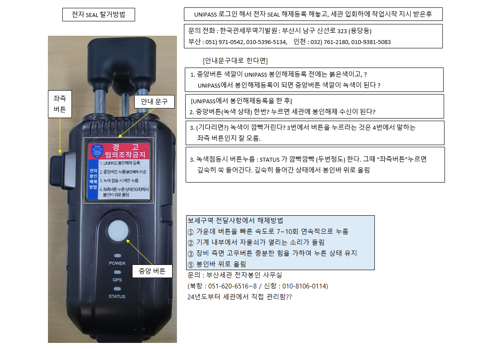▢ 보세운송 차량정보를 보세창고에서 알 수 있는 시점에 대해서...
1) 보세운송업체가 세관에 전송하고 - 세관에서 창고에 전송[보세프로그램으로 수신]하였음.
2) 보세운송업체가 세관에 전송하는 시점이 예전에는 반입완료 후에 오기도 하였고 누락도 있었음.
3) 관리가 강화되어 보세운송 반출 전에 정보가 전송되는 것 같음.
★ 보세운송 업체가 화물관리번호를 넣지 않으면??
미래소프트 프로그램에 BL, 화물관리번호, 반입잡은 것의 반입NO. 가 공란이 된다.
'이 경우, 배차예정정보를 수기로 입력해야 함.' ==> 반입정보 끌어오면서 차량번호 넣기. 정보생성.
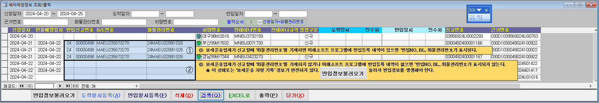★ 기존(작성법 참고) : 엑셀활용하여 '보세운송차량기록지' 작성.
★ 선택(작성법 참고) : 미래소프트 프로그램에서 엑셀활용하여 '보세운송수단 배차예정내역' 작성.
▢ 기존 작성법 : '통합적용' 엑셀파일에서, '보세운송차량기록지' 기본정보 기록방법
1. '리스트'시트에서 반입NO, 도착일, 도착일시를 기록한다. 차량번호만 기록하면 되는 정보가 된다.

2. 1.의 정보를 '배차'시트로 편집하여 옮기는 매크로 실행.
3. '배차'시트 확인. 2.에서 매크로 실행으로 넘어오면 '배차'시트 맨 아래에 누적된다.
'완성되면 여기서 출력' (출력물에 머리글 나오도록 : 클릭으로 머리글 삽입 활용)
'출력한 정보'는 'DO'시트로 복사이동후 삭제
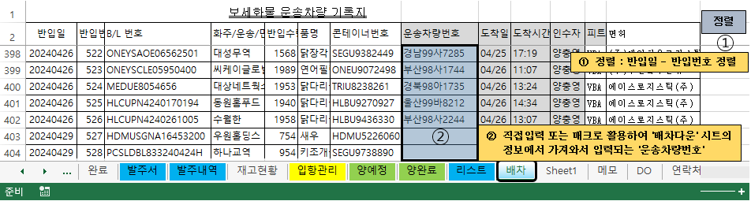▢ 기존 작성법 : '배차'시트에 비어있는 운송차량정보를 '배차다운' 시트에서 차량번호 가져오는 방법
※ '통합적용' 엑셀파일 켜놓기 - ①'배차다운' 시트 선택해 놓기
※ 순서 : 배차예정정보를 엑셀파일로 변환 - 붙여넣기 - 매크로 실행(차량번호 있는것에 대해서 가져옴)
▸ 메뉴에 접근 : EDI - 기타정보 - 배차예정정보 조회/출력
▸ 배차예정정보 엑셀로 변환 : ① 신청일자 기간 설정, ② 검색 클릭, ③ EXCEL로 클릭, ④ EXCEL화일로 변환하기! 클릭
▸ ① (변환된 엑셀파일에서)배차예정정보 복사(L열까지만), ② '통합정보' 파일 '배차다운' 시트에 붙여넣기,
③ '리스트' 시트의 '배차예정메모' 매크로 상자 클릭
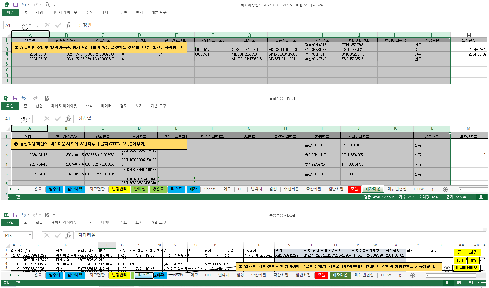▸ '배차'시트에 도착일과 도착시간 누락된곳 기록하고 편집하여 출력하여 보관한다.
▢ (기존작성법을 사용하지 않을 경우)미래소프트 프로그램에 기록하여 작성 : '보세운송수단 배차예정내역'
※ 참고 : 더 복잡하고 손이 많이 가서 이 방법을 사용하지 않고 있음
※ 순서 : 반입NO, BL, 화물관리번호 뜨지 않는 정보는 '배차예정정보 수기 입력'으로 생성,
▸ 메뉴에 접근 : EDI - 기타정보 - 배차예정정보 조회/출력
★ 보세운송 업체가 화물관리번호를 넣지 않으면??
미래소프트 프로그램에 BL, 화물관리번호, 반입잡은 것의 반입NO. 가 공란이 된다.
'이 경우, 배차예정정보를 수기로 입력해야 함.' ==> 반입정보 끌어오면서 차량번호 넣기. 정보생성.
★ 활용하여 '배차예정정보' 생성 방법 (새로운 정보가 생성됨)
▸ ① 클릭, ② 검색정보 설정, ③ 차량번호 입력, ④ 체크하기, ⑤ '배차예정정보저장(A)' 클릭.
★ : 차량번호수정, 컨테이버번호수정, 도착일시 수정
★ : 반입일시 수정
▢ 법령정보 (도착일과 도착일시 기록 및 자료보관 2년)
수출입물류과 620-6708 김수희 주무관(20240911)
주요업무 : 보세화물 반출입, 화물관리번호 생성, 반출기간 연장 (이상보고 문의는 여기로 한다)
※ 신항통관감시과 아님 !! 주요업무에 '보세구역 순찰, 이상보고, 재고조사', 주요업무로 찾기시 헷갈릴수 있음.
▢ 보세화물관리에 관한 고시 제5조(물품의 반입)
③ 운영인은 반입된 물품이 반입예정 정보와 품명.수량이 상이하거나 안보위해물품의 반입, 포장파손 누출,
오염 등으로 이상이 있는 경우에는 즉시 별지 제1호서식의 반입물품 이상보고서에
다음 각 호의 서류를 첨하여 전자문서로 세관장에게 제출하여야 한다.
다만, 전자문서로 제출할 수 없는 경우에는 서류로 제출 할 수 있다.
1. 사유서 (화주의 사유서)
2. B/L 사본 등 세관장이 반입물품 이상여부 확인을 위해 필요한 서류
(반입물품 이상보고서, 입고확인서, B/L, 팩킹리스트, 인보이스)
▢ 반입물품 이상보고 및 이상보고후 반입신고까지 과정
※ 세관 감시국 수출입물류과 반출입관리 담당자가 담당합니다.
1. 먼저 gross 중량 기준으로 1개의 중량을 근사값으로 정하여 신고할 수량과 gross중량을 확정하여
다음과 같이 반입물품 이상보고서를 작성해 봅니다. 내용에 이상이 없는지 확인하고 이대로 진행합니다.

2. 화주의 사유서를 받아야 하는데 창고측에서 대신 적고 팩스보내서 확인하고 명판 직인 찍어달라고 하는 것이
진행이 빠르고 수월할 수 있습니다.
미리 만들어 놓은 반입물품 이상보고서를 화주(관세사)에게 팩스 보내주고
참고하여 직접 사유서를 작성하여 직인 명판 찍어서 보내달라고 하던지,
대신 적은 사유서를 보내주면서 확인 후 화주의 명판 직인을 찍어서 보내달라고 해서 준비합니다.
★ 세관 검토/승인 담당자에 따라서 더 자세한 내용을 담은 화주의 사유서를 요구하는 경우도 있습니다.
★ 요구사항을 화주에게 전달하여 다시 받아야 하는 경우도 있습니다.
3. B/L, 팩킹리스트, 인보이스 없으면 다시 달라고하고 훼손되었으면 깨끗한 걸로 다시 보내달라고 합니다.
4. 창고의 입고확인서 준비합니다.
※ 준비한 서류들을 스캔본으로 묶어서 만들어 놓습니다.. (서류첨부 준비)
※ 2023.08.14 세관에서 입고확인서에 보세사 성명 및 싸인 넣으라고 하였음.
※ 보세창고 명판과 도장 찍고 보세사 성명 및 싸인 넣을것
5. 유니패스에서 반입이상보고서 작성 및 전송
▸ 메뉴에 접근 : 유니패스 공인인증서 로그인후, ① 전자신고 클릭, ② 화물 클릭.
▸ 메뉴에 접근 : ① '이상보고' 입력, ② 조회 클릭, ③ 반입물품 이상보고서 클릭.
▸ 이상보고서 내용 작성
※ 오류때문에 전산팀에 문의했을때 화물관리번호, 적하목록관리번호, BL번호를 대문자로 입력해야 한다고 하였음.
※ 대문자상태로 화물관리번호 - 없이 입력. 입력후에 알파벳 O,I등이 자동으로 소문자로 바뀌는듯 합니다.
6. 반입이상보고서 발송즉시 접수되는 문서이고,
접수되면 세관담당자가 확인후 물어볼 것이 있으면 유선으로 연락이 올 것입니다.
보고서 만으로 확인이 가능한 경우는 보통 검토 결과를 전자문서로 보내는데
'기각'과 '확인' 두가지 입니다. 두가지다 '승인통보' 제목으로 수신됩니다.
화물진행정보에서 확인하는 것이 더 직관적이니 화물진행정보에서 확인하고 '확인'의 승인통보라면 7.번
7. 반입이상보고의 승인통보를 확인하고 이상보고한 내역대로 반입신고합니다.
8. 사유서를 다시 제출할 때, 또는 서류첨부를 누락했을때 '첨부서류 사후제출' 방법
▸ 메뉴에 접근 : ① 전자신고 클릭, ② 첨부서류 사후제출 클릭.
▸ 첨부서류 사후제출
※ 처리가 완료된 것은 조회되지 않습니다.
▢ 반입정정 (사례는 출력물 참고)
예) 중량만 정정되는 경우 : 반출입중량, 사고중량, 사고유형 3가지를 기재하여야 한다. (역으로 이상보고 할때의 정보라고 보면 되겠다)
▢ 보세화물관리에 관한 고시」 제9조제(반입확인 및 반입신고)
⑤ 운영인은 제1항부터 제4항에 따른 반입신고 내역을 정정하려는 때에는 별지 제6호서식의
반입신고 정정 신청서를 세관장에게 전자문서로 제출하고 승인을 받아야 한다.
▢ 반입정정 승인 신청을 하는 경우들
1. 취소 : 착각하여 다른물품을 반입신고 한 경우 등.(선 반입신고 취소)
※ 도착하지 않은 물품을 다른 물품으로 착각하여 반입신고 하였다면
꼭! 반출정정 승인신청 후에 승인을 받아 반입신고 내역을 삭제해야한다.
2. 정정 : 반입신고 내역의 일부를 정정하려는 경우
A. 몇개가 초과 되거나 모자란데 맞는것으로 착각하고 적하목록대로 신고하였다.
B. 100묶음으로 진행하는 화물인데 200개로 적하목록 제출부터 잘못 진행되어 반입된 경우.
C. B/L과 반입예정정보가 다른데 확인하지 못하고 반입신고 한 경우.
D. 수입검사 과정에서 내용물의 중량이 부족한 경우 등, 중량을 수정하는 경우가 있음.
★ 보세창고와 화주 등 관련이 있으면 사유서를(자세하게 설명) 제출하여야 합니다.
▢ 유니패스에서 반입정정신청 작성 및 전송
▸ 메뉴에 접근 : 유니패스 공인인증서 로그인후, ① 전자신고 클릭, ② 화물 클릭.
▸ 메뉴에 접근 : ① '반입신고 정정' 입력, ② 조회 클릭, ③ 반입신고 정정 신청서 클릭.
▸ 반입정정신청 내용 작성
▸ 반입정정 승인 신청은 발송즉시 접수되는 문서이고,
접수되면 세관담당자가 확인후 물어볼 것이 있으면 유선으로 연락이 올 것입니다.
검토가 다음날까지도 이어질 수 있습니다. 미비된 서류 및 내용에 관한 연락이 올 수 있습니다.
'승인'이 되면 신청한 내용대로 변경됩니다. '승인통보' 제목으로 수신됩니다.
수정된 화물진행정보대로 미래소프트 반입정보 수정.
'기각'되면 신청을 다시 해야되는데 차수 부분이 순번+1이 되니 기재하여야함.
5. 메모
※ 계육을 이상없이 반입신고 하였는데 1팩 빠진 물품이 발견되어 반입신고 삭제신청을 하려고 하였으나
정정으로 진행한 경우가 있었음. 이 경우 수정된 BL을 요구하였음.
OO 선사에서 볼펜으로 선을 긋고 수기로 중량, 수량 등 바로잡아 쓰고 선 그은 곳에
도장 찍는 형식으로 수정하였음.
▢ 반출정정 (사례는 출력물 참고)
▢ 반출정정 = 수입신고수리된 내역을 반출신고 후에 수정하는 것
1. 대부분 화주(관세사)가 수입신고할때 수량 또는 중량을 잘못 기재하여 수입신고 한 후에
수입신고 수리가 되고 창고에서 반출신고를 완료하였는데, 이 후에 화주가 수입신고내역을 수정하게 되면
창고에서도 수정된 정보대로 반출정정 신청하여 승인을 받아야합니다.
2. 창고에서 정정을 하지 않으면 해당 BL의 다음 수입신고때 수입신고가 수리가 되지 않는 경우가 많습니다.
▢ 유니패스에서 반출정정신청 작성 및 전송
▸ 메뉴에 접근 : 유니패스 공인인증서 로그인후, ① 전자신고 클릭, ② 화물 클릭.
▸ 메뉴에 접근 : ① '반출신고정정' 입력, ② 조회 클릭, ③ 반출신고정정신청서 클릭.
▸ 반입정정신청 내용 작성
▸ 반출정정 승인 신청은 발송즉시 접수되는 문서이고,
접수되면 세관담당자가 확인후 물어볼 것이 있으면 유선으로 연락이 올 것입니다.
검토가 다음날까지도 이어질 수 있습니다. 미비된 서류 및 내용에 관한 연락이 올 수 있습니다.
'승인'이 되면 신청한 내용대로 변경됩니다. '승인통보' 제목으로 수신됩니다.
수정된 화물진행정보대로 미래소프트 반출정보 수정.
'기각'되면 신청을 다시 해야되는데 차수 부분이 순번+1이 되니 기재하여야함.
5. 메모
※ 창고쪽 : 사유서
※ 화주(관세사)쪽 : 수입신고 정정승인서, 정정승인신청시 세관에 제출된 화주의 사유서
▢ 특허보세구역 운영상황의 보고, 재고조사 보고
특허보세구역 운영에 관한 고시(2023.11.1) 제4장 특허보세구역 관리 제20조(보세구역 운영상황의 보고)
① 특허보세구역의 운영인은 매년 다음 각 호의 사항을 기재한 보세구역 운영상황을 다음 해 2월말까지 관할세관장에게 보고하여야 한다.
1. 특허 또는 특허기간 갱신시 구비한 시설요건 등의 변동 여부
2. 임대차기간의 연장 여부(임대시설의 경우에만 해당한다)
3. 종업원명단(보세사를 포함한다)
4. 장치기간 경과화물 보관 상세내역(12월31일 기준으로 한다)
5. 그 밖에 세관장이 보세구역 등의 운영과 관련하여 필요하다고 인정한 사항 ※재고내역을 요청할 경우가 많다(이 경우, 재고조사 보고가 된다)
보세화물관리에 관한 고시(2024.12.30) 제16조(재고관리 및 확인)
① 운영인등은 매 분기별 자체 전산시스템의 재고자료를 출력하여 실제재고와 이상이 있는지를 확인하여야 하며, 전체 전산재고내역과
현품재고조사 결과를 세관장에게 보고하여야 한다. 다만 세관장은 「 수출입물류업체에 대한 법규수행능력측정 및 평가관리에 관한 훈령」
제2조제1호에 해당하는 운영인 또는 자율관리보세구역으로 지정받은 경우 그 운영인에게 연 1회 보고하게 할 수 있다.
▢ (공문) 법규수행능력 점검 통지서 등기우편/전자등기
※ 유니패스에서 점검표 작성 및 증빙자료 첨부후 제출(전송) - 세관에서 검토후 제출서류 인정하거나 실사
▢ 특허갱신 세관 담당부서 : 감시국 관세행정관
▢ 특허갱신 관련 고시 등 : 특허갱신 신청
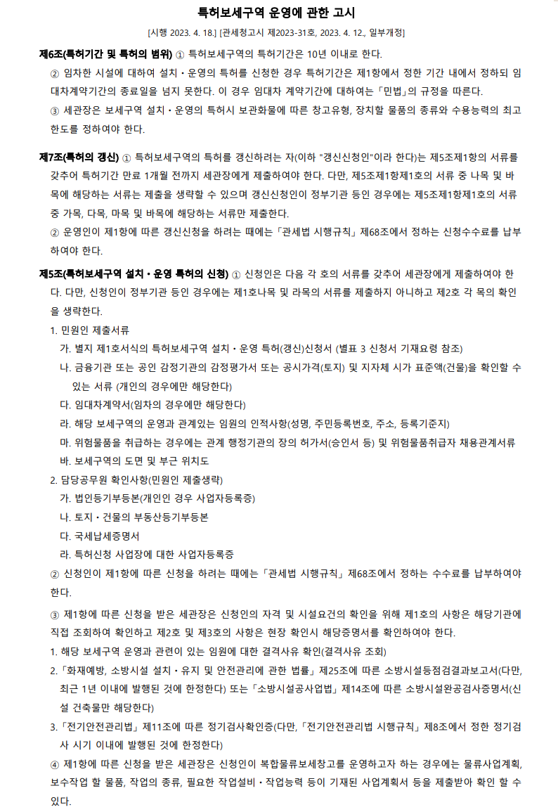▢ 특허갱신 관련 고시 등 : 영업용보세창고 특허기준, 특허요건
▢ 특허갱신 참고사항 ★제출자료에 대해 설명 가능하도록 숙지해야 한다.★
※ 특허만료일 1개월전까지 신청서제출 ==> 신청서와 제출서류의 완료본을 의미합니다.
▸ 특허만료 2개월전 즘에 세관에 연락하여 제출자료에 대해 문의하여 준비를 시작합니다.
▸ 최근 갱신신청 자료를 참고하면 되겠습니다.
※ 2024.5.1 만료기준, 3월 초에 연락하여 준비서류 목록 받아 와서 제출서류 준비하였음.
두번정도 세관에 방문하여 중간점검 및 미비하다고 판단되는 자료를 준비하여 3월19일에 신청하였고,
특허신청수수료 고지서를 유니패스를 통해 발급받아 납부하고 납부내역 캡쳐하여 메일전송하였음.
제출서류 검토중인 4월에는 두번정도 추가자료 및 보완요청이 있었음. 4월중순에는 창고에 방문하여 확인이 필요했던
내용을 확인하였음. 주로 cctv 관련이었음.
▢ 2024년 4월30일 특허만료 2개월전 즈음 특허갱신 준비자료 설명듣고 수령
▸ 신청시 제출자료 목록, 신청서 양식 및 기재요령, 파워포인트 작성 요청자료.
공문과 발송분
공문과 발송분
▢ 2023.4.1 창간 부산세관 보세화물 소식지 "여!보세요"
※ '보세화물취급방법 및 관세법관련 교육일지'에 교육내용에 추가하라고 하였음.
▢ 자료찾기
※ 부산본부세관 사이트 - 알림.소식 - 공지사항 - 부산본부세관공지사항 (3페이지 문의사항)
• 여보세요 23년 11월, 특허심사평가항목배점조정
▢ 2024.8.28 : 보세창고 출입자 관리대장 양식 변경 요청
▢ _07_보세구역전달사항_특별점검팀연락처
▢ 2024.7.17 : CCTV 접속정보 요청 (현장중심 CCTV 13채널 제공함)
▢ 2024.12.23 : 시스템 만들었는데 사용하기를 권유?
▢ 25.2.23, 2025.3.15개통예정... 방화벽허용정책관련 미래소프트에 확인함
▢ 25.3.12, 유니패스 장비교체 사업, _07_20250223_방화벽허용정책안내 후속
▢ 25.3.21, 보세사 업무대행 신고서 신설,
▢ 25.5.19, 법규준수도 제도 개편 설명회,
▢ 25.2.24, cctv대수와화소정보제공요청 (보세구역 전달사항)
▢ 2024.10.15 : 수입식품등 보관업 안전관리 안내서
▢ 2025.07.03 : 20250703 수입식용축산물보관장 검역시행장 안전조치 등 협조요청
▢ 2024.8.26 : 서울세관, 사세 서울지점 반출입 자료 요청
▢
④ 검사의 일부... 생략할 수 있다.
④-1 : 지정해역에서.., 수산물이 생산되는 해역의 범위를 정하여 위생관리기준에 맞게 관리되는지...
④-2 : HACCP지정된 곳..
④-3 : 원양어어허가를 받은 어선..
※ 검사할 수 없는 상황이거나, 위생관리기준을 지킨다는 가정에서 검사항목의 일부를 하지 않는다??
수출수산물.수산가공품 검사 대상품목 지정 [시행 2023.2.28] [해양수산부고시 제2023-32호]
제1조(대상품목 지정) 농수산물 품질관리법 제88조제1항제2호에 따라 수출하는 수산물.수산가공품 중 검사를 받아야 하는 대상품목을 다음과 같이 지정한다.
※ 농수산물 품질관리법 제88조제1항제2호 : 외국과의 협약이나 수출 상대국의 요청에 따라 검사가 필요한 경우
• 대상국가 : 중화인민공화국(홍콩을 제외한다), 베트남사회주의공화국, 인도네시아공화국, 태국, 미합중국, 일본, 유럽연합, 러시아 및 에콰도르공화국
• 대상품목 : 수출하는 수산물.수산가공품 중, 별표에 규정한 국가별 세부 검사대상품목.
다만 원양어업허가를 받은 선박에서 포획 또는 채취하여 현지에서 수출하는 수산물.수산가공품을 그렇지 않다.
• 비고 : 두 나라간 수출입 수산물 위생관리에 관한 약정서
★ 냉동창고는 I.공통 기준만 충족하면 됩니다.
'위생관리기준'을 골격으로하여 창고실정에 맞게 '위생관리기준서' 작성 및 준수 ==> 점검시 증명
수산물의 생산.가공시설 위생관리기준 (점검기준은 위생관리기준과 같다. 참고할것)
위생관리기준에 따라, 업체 실정에 맞는 '위생관리기준서'를 작성하고 지킨다 (점검시, 위생관리기준서를 토대로 검증한다)
C : 긴요(Critical), 위반이 없어야 한다. [HACCP의 경우 위반이 없어야 한다]
K : 중요(Key), 위반이 2개 이하여야 한다. [HACCP의 경우 위반이 2개 이하여야 한다]
O : 그 밖의(Other), 위반이 3개 이하여야 한다. [HACCP의 경우 위반이 2개 이하여야 한다]
S : 선택(Swing)
점검결과 표시방법 : 적합시 : O, 부적합시 : X, 적용할 수 없는 경우 : NA
▢ 개요

▢ 동일냉장이 등록한 나라 (등록번호) : 중국, 베트남, 태국, 인도네시아
▢ 수품원에서 확인하는 필수정보 4가지 [화주에 교부자료] , 나머지는 화주의 필요에 따라 추가 가능
▢ 동일냉장에 물품이 있는경우 화주가 직접 신청하면서 검사장소를 동일냉장으로 지정한 경우이다.
▢ 해당화주의 명의로 검사대상물의 재고확인서를 준비해 두었다가 검사원에게 제출하고 검사 입회한다.
일본 등, 약정에서 제외된 물품이거나 어떤 경우에라도 화주가 검사신청하는 경우 검사장소가 동일냉장인 경우.
약정에서 제외된 물품이거나 어떤 경우에라도 화주가 검사신청하는 경우 검사장소가 동일냉장인 경우.
▢ 첫 신청때 화주가 요청하는 자료, 스티커 만들때 들어가는 창고 정보 (인쇄 가능)
▢ 신청,검사실무 참고. 2023년 10월경부터 금요일은 현장(창고)방문을 하지 않는다.

?? 약정체결국가이지만 약정내용에 없는 경우, 예를 들어 자숙된 제품은 세균검사 등을 하지 않는다고 할때,
가공일지 및 위임장을 작성하여 ?????
▢ 수산물 수출검사 흐름도

▢ 수산물 품질관리원 주소:https://www.nfqs.go.kr/hpmg/ 아이디:dongil 비번(영어상태에서 한글치기): 동일1280 여기서 복사됨
▢ 2020-10-14부터, 위임장, 가공일지 원본제출대신 신청시 PDF파일로 대체, 가공일지 검사원 서명 생략

▢ 사이트변경된듯함
 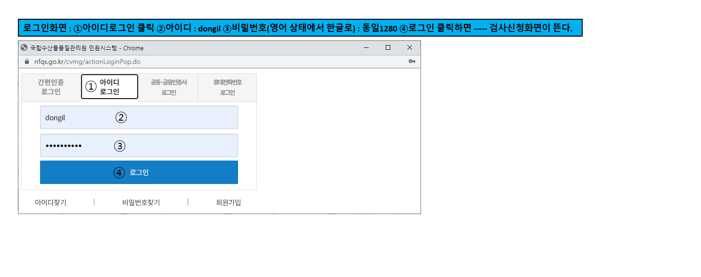
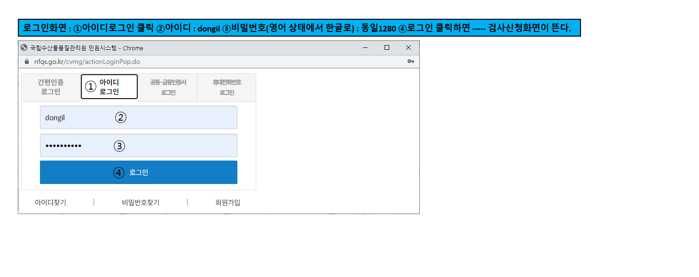
▢ 신청내역 확인방법
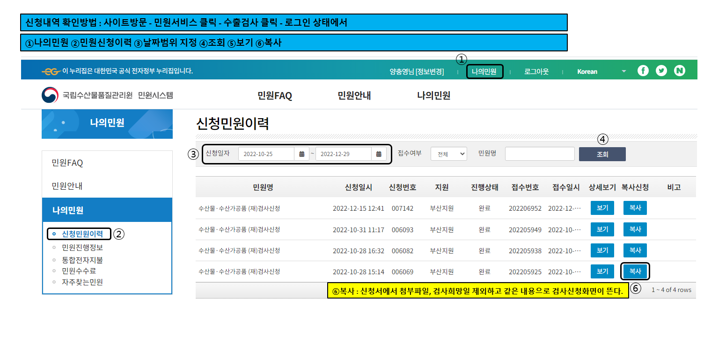▢ 자료 샘플 (전산신청 작성법)

▢ 2024.02.27신청분부터, 생산량, 검사량, 재고량 기재방법 바뀜
1. 재고량(미검사량)은 항상 '0'으로 기록함
2. 생산량 계 = 검사받을 중량
3. 검사량 계 = 검사받을 중량
4. 생산량 누계 = 기존생산량 + 검사받을 중량
5. 검사량 누계 = 기존검사량 + 검사받을 중량
▢ 창고 위임장 (작성방법)


▢ 창고 가공일지 (작성방법) (같은년도는 누적하여 작성, 년도가 바뀌면 새롭게 작성시작)
★ 냉동창고는 I.공통 기준만 충족하면 됩니다.
수산물의 생산.가공시설 위생관리기준 (점검기준은 위생관리기준과 같다. 참고할것)
위생관리기준에 따라, 업체 실정에 맞는 '위생관리기준서'를 작성하고 지킨다 (점검시, 위생관리기준서를 토대로 검증한다)
C : 긴요(Critical), 위반이 없어야 한다. [HACCP의 경우 위반이 없어야 한다]
K : 중요(Key), 위반이 2개 이하여야 한다. [HACCP의 경우 위반이 2개 이하여야 한다]
O : 그 밖의(Other), 위반이 3개 이하여야 한다. [HACCP의 경우 위반이 2개 이하여야 한다]
S : 선택(Swing)
점검결과 표시방법 : 적합시 : O, 부적합시 : X, 적용할 수 없는 경우 : NA
_01_등록공장점검2025년점검공문
• 2025.11.12 25년 하반기 정기점검. 6급 강효주, 7급 이현주
• 일일위생점검표 "○"만 하지말고 x,△등 기록후 조치사항 첨부하는 방식으로 변경 요청함
• 코로나관련 폐기해도 된다고 함 (일일위생점검표 맨 아래 코로나관련 조치사항 삭제)
• 등록공장 점검과 관련된 수질검사성적서(32만원 비용발생) 대신에
"상수도사업본부에서 실시하는 정수장별 수질검사"결과를 매월 첨부하는 방식으로 해본다고 함
1) 사이트 : 부산광역시 상수도사업본부 https://www.busan.go.kr/water/index
2) 상수도수질 - 수질검사 - 자체검사결과 클릭
3) 월별로 수질검사결과가 hwp파일로 제공된다 - 다운로드하여 출력, 월별 결과 편철하는것으로 대체해보고자 한다고 함
4) 명장, 화명, 덕산, 범어사 정수장의 결과가 함께 취합되어 있다. 여기는 화명정수장?
5) 수도법에서 정한 저수조수 : 시료명 저수조수, 1층의 수도물 받아서 검사. (6만원정도, 항목이 적음)
6) 기존 등록공장 관련 수질검사 : 시료명 수도수, 1층의 수도물 받아서 검사. (32만원정도, 항목이 많음, 정수장꺼와 같은듯)
7) 5),6)'모두 판정은 수도법 시행규칙 제22조의4에 따른 먹는물 수질기준 및 검사등에 관한 규칙[별표1]에 의거합니다.'
8) 등록공장 관련 물은 수도에서 끌어올려 저수조를 통해 사용하는 물이다.
9) 수품원에서 수질검사 성적서를 다시 요청하는 경우 5)번의 것으로 갈음이 가능할까?
_01_20250312_수산생물검역시행장점검처음
▢ covid_중국사이트, 중국해관 단일창구 사이트
주소:https://www.singlewindow.cn 아이디:CKOR18PP1805010017 비번:!dongil3368 여기서 복사됨


※ 골뱅이살의 경우 등록이 안되어 있었는데 중국 통관에 관하여 화주가 책임을 진다는 각서를 첨부하여 검사신청 하였음.
▢ 공문요청 등 경위
▢ 진행상태 메모

주소:https://www.singlewindow.cn 아이디:CKOR18PP1805010017 비번:!dongil3368 여기서 복사됨
2022.03.31.해외생산기업등록절차(맨 처음 아이디 일괄등록 해놓고 세부기업정보 등록하라는것)
주소:https://www.singlewindow.cn 아이디:CKOR18PP1805010017 비번:!dongil3368 여기서 복사됨
연장신청아니고 업체정보 입력(변경에 해당한다)한 것 자세히, 참고 : 변경신청중일때 연장신청 안됨


수품원에서 제품등록에 관한 설명회를 개최함


주소:https://www.singlewindow.cn 아이디:CKOR18PP1805010017 비번:!dongil3368 여기서 복사됨
2022.6.30까지 연장등록신청 안해서 영문사유서 제출함, 수품원에서 중국측에 양해구함
주소:https://www.singlewindow.cn 아이디:CKOR18PP1805010017 비번:!dongil3368 여기서 복사됨
[메모] 2020.10.14 신청분부터 파일첨부 형식 (이전까지 검사원 도착시 원본제출)
[메모] 2020년부터 중국, KP-034(CKOR18PP1805010017) 형식으로 기재하여야함, 가공일지, 스티커. (CKOR18PP1805010017=중국사이트 등록번호)
[메모] 스티커내용이 같을때 최근 신청자료로 업데이트 할 것, 품명등 스티커내용이 조금이라도 다르면 기록 남길것
| 한글품명(정보 클릭시 pdf자료 나타남, default.css .td폭조정) | 전산신청품명(한글/영문)[title] | 영문품명(스티커) | 학명 |
|
2019.07.25 : 냉동 각시가자미 (KVN-044, 베트남)
|
*냉동가자미(각시가자미),FROZEN YELLOWFIN SOLE | FROZEN YELLOW FIN SOLE | |
|
2024.03.27 : 냉동 유럽물레고둥 (KP-034, 중국)
|
*냉동고둥살(골뱅이),FROZEN WHELK MEAT |
FROZEN RAW WHELK MEAT |
BUCCINUM UNDATUM |
|
2024.05.28 : 냉동 고등어 (KVN-044, 베트남)
|
*냉동고등어,FROZEN MACKEREL | FROZEN WHOLE ROUND MACKEREL | |
|
2019.09.09 : 냉동 꽁치 (KVN-044, 베트남)
|
*냉동꽁치,FROZEN MACKEREL PIKE | FROZEN PACIFIC SAURY WHOLE ROUND | |
|
2019.06.17 : 냉동 절단꽃게 (KVN-044, 베트남)
|
*냉동게(꽃게,절단),FROZEN CUTTED SWIMMING CRAB | FROZEN CUT SWIMMING CRAB | |
|
2024.06.19 : 냉동 날치알 (KTH-026, 태국)
|
*냉동어란(날치알),FROZEN FLYING FISH ROE | FROZEN FLYING FISH ROE | |
|
2018.11.20 : 냉동 돔 (KP-034, 중국, FAO 77)
|
*click ['TILE'로 검색한 수품원[대소문자구분] 품명정보]
냉동돔(지브라타일돔), FROZEN ZEBRA TILE FISH
냉동돔(등흑점옥두어), FROZEN TILEFISH 냉동돔(등흑점옥두어,F), FROZEN TILEFISH FILLET 냉동돔(남방옥돔), FROZEN WARD'S TILEFISH 냉동돔(지브라타일돔,F), FROZEN ZEBRA TILE FISH FILLET |
FROZEN TILEFISH | CAULOLATILUS PRINCEPS |
|
2019.06.17 : 냉동 대구곤 (KVN-044, 베트남)
|
*냉동곤이(대구),FROZEN COD MILT | FROZEN PACIFIC COD MILT | |
|
2019.06.17 : 냉동 명란 (KVN-044, 베트남)
|
*냉동어란(명란),FROZEN ALASKA POLLACK ROE | FROZEN ALASKA POLLACK ROE | |
|
2021.12.08 : 냉동 명태 (KP-034, 중국, FAO 61)
|
*냉동명태,FROZEN ALASKA POLLACK | FROZEN ALASKA POLLOCK H/G | THERAGRA CHALCOGRAMMA |
|
2018.12.07 : 냉동 민어 (KP-034, 중국, FAO-77)
|
*click [수품원[대소문자구분] 품명정보, CROAKER]
냉동조기(참조기),FROZEN YELLOW CROAKER
냉동조기(부세),FROZEN LARGE YELLOW CROAKER 냉동민어(민어),FROZEN BROWN CROAKER 냉동민어(흑조기),FROZEN BLACKMOUTH CROAKER 냉동민어(보구치),FROZEN WHITE CROAKER 냉동민어(꼬마민어),FROZEN CROAKER 냉동민어(파마이석태),FROZEN PAMA CROAKER 냉동민어(대두이석태),FROZEN BIG HEAD PENNAH CROAKER 냉동민어(긴가이석태),FROZEN BOBO CROAKER 등등.... |
FROZEN YELLOW CROAKER | UMBRINA RONCADOR |
|
2021.01.18 : 냉동 방어 (KP-034, 중국, FAO 61)
|
*냉동방어,FROZEN YELLOW TAIL | FORZEN YELLOW TAIL | SERIOLA QUINQUERADIATA |
|
2023.08.24 : 냉동 방어 (KP-034, 중국, FAO 61)
|
*냉동방어,FROZEN YELLOW TAIL | FORZEN YELLOWTAIL ROUND | SERIOLA QUINQUERADIATA |
|
2024.06.19 : 냉동 북방대합조개살 (KTH-026, 태국)
|
*click 냉동대합살(북방대합)
냉동대합(북방대합),FROZEN SAKHALIN SURF CLAM
냉동대합살(북방대합),FROZEN SAKHALIN SURF CLAM MEAT 냉동대합살(북방대합,포장횟감),FROZEN SAKHALIN SURF CLAM MEAT 냉동대합(북방대합,자숙),FROZEN BOILED SAKHALIN SURF CLAM 냉동대합살(북방대합,자숙),FROZEN BOILED SAKHALIN SURF CLAM MEAT 냉동대합살(북방대합,자숙,S),FROZEN BOILED SAKHALIN SURF CLAM MEAT SLICE 냉동대합살(북방대합,자숙,S,포장횟감),FROZEN BOILED SAKHALIN SURF CLAM MEAT SLICE 냉동대합살(북방대합,자숙,포장횟감),FROZEN SAKHALIN BOILED SURF CLAM 냉동대합살(북방대합,자숙,횟감),FROZEN SAKHALIN BOILED SURF CLAM |
FROZEN ARCTIC SURF CLAM | |
|
2023.10.25 : 냉동 삼치 (KP-034, 중국, FAO 61)
|
*click 냉동삼치
냉동삼치,FORZEN JAPANESE SPANISH MACKEREL
냉동삼치(F),FORZEN JAPANESE SPANISH MACKEREL FILLET 냉동삼치(줄삼치,F),FROZEN BONITO FILLET 냉동삼치(줄삼치),FROZEN STRIPED BONITO 냉동삼치(동갈삼치),FROZEN NARROW-BARRED SPANISH MACKEREL 냉동삼치(꼬지삼치),FROZEN WAHOO 냉동삼치(비늘삼치),FROZEN BUTTERFLY MACKEREL 냉동삼치(검정통삼치,F),FROZEN BARRACOUTA(F) |
FROZEN SPANISH MACKEREL | SCOMBEROMORUS NIPHONIUS |
|
2022.09.22 : 냉동 삼치 (KVN-044, 베트남)
|
*냉동삼치,FROZEN JAPANESE SPANISH MACKEREL | FROZEN SPANISH MACKEREL WHOLE ROUND | SCOMBEROMORUS NIPHONIUS |
|
2023.07.12 : 냉동 새우, 초밥용 홍새우살 아르헨티나산 (KTH-026, 태국)
|
*냉동새우살(적새우),FROZEN RED SHRIMP MEAT | FROZEN ARGENTINE RED SHRIMP MEAT | |
|
2019.06.17 : 냉동 아귀 (KVN-044, 베트남)
|
*냉동아귀,FROZEN MONKFISH | FROZEN MONK FISH | |
|
2022.05.26 : 냉동 오징어, 연근해 (KP-034, 중국, FAO 61)
|
*click 냉동오징어,FROZEN SQUID
냉동오징어(동체),FROZEN SQUID(TUBE)
냉동오징어(동체,자숙),FROZEN SQUID BOILED(BODY) 냉동오징어,FROZEN SQUID 냉동오징어(자숙),FROZEN BOILED SQUID 냉동오징어(지느러미),FROZEN SQUID FIN 냉동오징어(지느러미,자숙),FROZEN BOILED SQUID FIN 냉동오징어(입살),FROZEN SQUID MOUTH MEAT 냉동오징어(머리살),FROZEN SQUID(HEAD MEAT) 냉동오징어(다리),FROZEN SQUID(LEG) 냉동오징어(다리,자숙),FROZEN BOILED SQUID(LEG) |
FROZEN SQUID | TODARODES PACIFICUS |
|
2020.12.16 : 냉동 오징어, 무라오징어 (KTH-026, 태국)
|
*냉동오징어,FROZEN SQUID | FROZEN GIANT SQUID MEAT | DOSIDICUS GIGAS |
|
2021.08.17 : 냉동 오징어, 무라오징어 동체(자숙) (KP-034, 중국, FAO 87)
|
*냉동오징어(동체,자숙),FROZEN SQUID BOILED(BODY) | FROZEN BOILED GIANT SQUID FILLETS | DOSIDICUS GIGAS |
|
2019.10.25 : 냉동 오징어 다리, 무라오징어 다리 (KP-034, 중국, FAO-87 [페루])
|
*냉동오징어(다리),FROZEN SQUID(LEG) | FROZEN GIANT SQUID TENTACLES | DOSIDICUS GIGAS |
|
2022.04.25 : 냉동 오징어, 무라오징어 족살 (KP-034, 중국, FAO 87)
|
*냉동오징어,FROZEN SQUID | FROZEN SQUID NECK | DOSIDICUS GIGAS |
|
2021.08.17 : 냉동 오징어 입살, 무라오징어 입살 (KP-034, 중국, FAO 87)
|
*냉동오징어(입살),FROZEN SQUID MOUTH MEAT | FROZEN SQUID MOUTH | DOSIDICUS GIGAS |
|
2021.07.21 : 냉동 오징어 다리, 포크오징어 다리 (KP-034, 중국, FAO-41)
|
*냉동오징어(다리),FROZEN SQUID(LEG) | FROZEN ILLEX SQUID TENTACLE | ILLEX ARGENTINUS |
|
2021.10.29 : 냉동 오징어 , 포크오징어 (KVN-044, 베트남)
|
*냉동오징어,FROZEN SQUID | FROZEN ILLEX SQUID | ILLEX ARGENTINUS |
|
2021.10.13 : 냉동 오징어 , 포크오징어 (KP-034, 중국, FAO-41)
|
*냉동오징어,FROZEN SQUID | FROZEN SQUID | ILLEX ARGENTINUS |
|
2019.08.22 : 냉동 연어 (KTH-026, 태국)
|
*냉동연어(태평양은연어), FROZEN CHHO SALMON | FROZEN SALMON COHO | |
|
2019.08.22 : 냉동 연어 (KTH-026, 태국)
|
*냉동연어(F), FROZEN SALMON FILLET | FROZEN ATLANTIC SALMON FILLET TRIM D | |
|
2019.08.22 : 냉동 연어 (KTH-026, 태국)
|
*click [수품원 품명정보 : 연어]
냉동연어,FROZEN SALMON
냉동연어(훈제),FROZEN SMOKED SALMON 냉동연어(F),FROZEN SALMON FILLET 냉동연어(태평양곱사연어),FROZEN PINK SALMON 냉동연어(태평양홍연어),FROZEN RED SALMON 냉동연어(태평양왕연어),FROZEN KING SALMON 냉동연어(대서양연어),FROZEN ALTANTIC SALMON 냉동연어(대서양연어,F),FROZEN ALTANTIC SALMON FILLET 냉동연어(태평양연어),FROZEN PACIFIC SALMON 냉동연어(태평양은연어),FROZEN COHO SALMON 냉동연어(태평양은연어,F),FROZEN COHO SALMON FILLET |
FROZEN ATLANTIC SALMON FILLET | |
|
2019.06.17 : 냉동 열빙어 (KVN-044, 베트남)
|
*냉동빙어(열빙어),FROZEN CAPELIN | FROZEN CAPELIN | |
|
2022.02.11 : 냉동 열빙어 (KTH-026, 태국)
|
*냉동빙어(열빙어),FROZEN CAPELIN | FROZEN CAPELIN | |
|
2019.06.17 : 냉동 임연수어 (KVN-044, 베트남)
|
*냉동임연수어,FROZEN ATKA MACKEREL | FROZEN ATKA MACKEREL | |
|
2023.05.23 : 냉동 장어 (KTH-026, 태국)
|
*냉동장어(붕장어,F),FROZEN CONGER EEL FILLET | FROZEN CONGER EEL FILLET | MURAENESOX CINEREUS |
|
2023.02.01 : 냉동 청어알 (KTH-026, 태국)
|
*냉동어란(청어알),FROZEN HERRING ROE | FROZEN HERRING ROE |
▢ 방어같은 경우 연근해산인 경우, 양식인지 아닌지 확인해야하는 품목인데 어획증명서나 수매확인서가 있어야함.
▢ 수출하려는 화주에게까지 소유권? 이동의 상세내역은 필요없고 어획증명서나 수매확인서만 있으면 됩니다.
※ _2025.04.01 수협중앙회, 정부비축물품 출고시 검사표전 부착 잘하기
※ _2025.04.01 중국 수출시, 참다랑어, 자연산, 양식산 표기
※ _20250517 수품원, 중국, 오징어분말 남극크릴새우 수출수요 조사
▢ 청어알 섭취방법, CK 최승우과장(20250205), 수출담당 김소은
▢ CK 최승우과장 수품원에 답변내용
- 어묵 재료로 들어가는데 어묵 제조 과정에서 재료들을 가열하여 반죽상태로 만드는 공정이 있다.
▢ 중국에서 통보된 위험분석 면제품목에 열거되지 않아... 각서
▢ 방어같은 경우 연근해산인 경우, 양식인지 아닌지 확인해야하는 품목인데 어획증명서나 수매확인서가 있어야함.
▢ 수출하려는 화주에게까지 소유권? 이동의 상세내역은 필요없고 어획증명서나 수매확인서만 있으면 됩니다.
2021년9월29일부터 대표자변경
세관
보세구역 운영자 법인 등기사항 변경 통보서 (명판, 직인), 법인등기부등본,
특허장사본, 자율관리사본, 사업자등록증(참고용)
위임장과 인감증명서는 달라고 안했음.
2021.9.29. 방문신청하였고 10월4일 대체휴일이라서
30일날 받으러오라고 해서받으러갔음.
구청
축산물보관업(별관3층, 경제진흥과, 220-4471) 법인등기부등본, 위임장(당일본),
인감증명서, 허가증 원본, 신청서(직인,명판). (직인,명판 지참 혹시모르니). 5000원,
3일후 연락오면 가지러 오라고함. 우편으로 받으려면 신청을 해야한다고 함.
식품보존업4417(환경위생과), 서류는 위와 동일, 수수료는 없음.
민원실에서 도장받아서 갖다주고 조금기다리니 등록증 새로 발급해줌.
식물 20250806 회원가입 다시함 ycy2000 dongil3368!
농림축산검역본부 영남지역본부 전자민원 : 아이디 ycy20001, 비번 !good1974,
개인회원 (법인으로 신청하면 마지막에 에러난다)
20210930 전자민원으로 신청 : 첨부파일 : 법인등기부등본, 사업자등록증
김태형주무관 010-9515-1394,600-6227, 전산신청했더니 틀린부분 자세히 가르쳐주었다.
검역장소명이 동일냉장(주)로 전산신청서상에 자동으로 떠서 보냈는데
지정서에 동일냉장보세창고로 되어있어서 일치하지 않으면
나중에 입간판 다 바꿔야하는 경우가 생긴다고 지적해주고
내아이디 비번 가르쳐주고 직접 수정해주었다
문자로 신청, 접수, 승인 순서대로 처리결과가 문자로 수신됨.
직접 받으러감. (중앙동2번출구, 롯데백화점 근처)
수산물품질관리원
생산.가공시설 등록 변경신청서. 법인등기부등본.
명판.직인.주민등록번호 풀.영문 이름.
우편으로 받았다.
수입식품등보관업
아이디(기업은 등록번호) : 20160004247,
비번: !good1974, 로그인 - 우리회사안전관리 - 민원
영업등록사항 변경 : 영업등록증, 변경사항을 확인할수 있는 서류, 기타, 시설배치도
전산으로 변경이 잘 안되서 문의했더니 서류첨부까지 되면
서류첨부해서 어떻게든 신청만하면 확인하고 연락하면서 신청받겠다고 함. (이렇게 했다)
안되면 팩스로도 진행이 가능하다고 함. 602-6201.
직원이 신청시 위임장 있어야 된다고 fax : 0502 604 7960, tel:602-6236
2022.05.23영업등록증 영문발행 되지 않는다고 함.(602-6236)
식품안전나라에 로그인해서 출력해서 쓰면된다고 함. 기존등록증은
검역시행장
우편20211005.부산광역시 중구 충장대로6 한진 R&D센터2층
농림축산검역본부 영남지역본부 축산물위생검역과 검역시행장 담당자앞
중앙동 10번출구, 큰건물 2층, 제출시 직접 갖다줌
신청서,사업자등록증,지정서원본 (+법인등기부등본,축산물보관업허가증 사본)
우편으로 받았다.
식물 : 수품원 건물과 따로, 세관골목
3. 2025.08.05 수입식물류검역장소 신규 신청
A. 식물검역 온라인 민원시스템 (검색)
※ 반입이 6개월동안 없으면 지정취소된다?
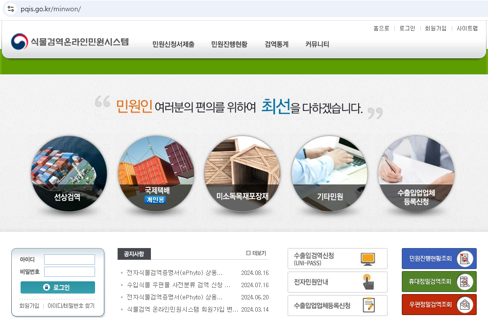※ 회원가입(본인인증) : 개인적으로 가입, 관할기관에 본부, 가입유형에 기업
※ - 보세장치장부호가 조회되지 않는 경우에는 신청하시려는 담당기관에 보세장치장부호를 먼저 등록하신 후 신규 신청하시기 바랍니다.
※ - 예시 화면의 보세장치장부호는 잘못된 정보이다. 03011597, 동일냉장(주)
※ - '검역장소명'이 특허장의 '보세구역명칭'이라면 '동일냉장(주) 보세창고'라고 해야한다.
★ 20250805신청후 다음날 현장점검시 잘못된 신청정보 바로잡으려고 하였고, 해당건 반려후 신규신청으로 다시 신청하였다.
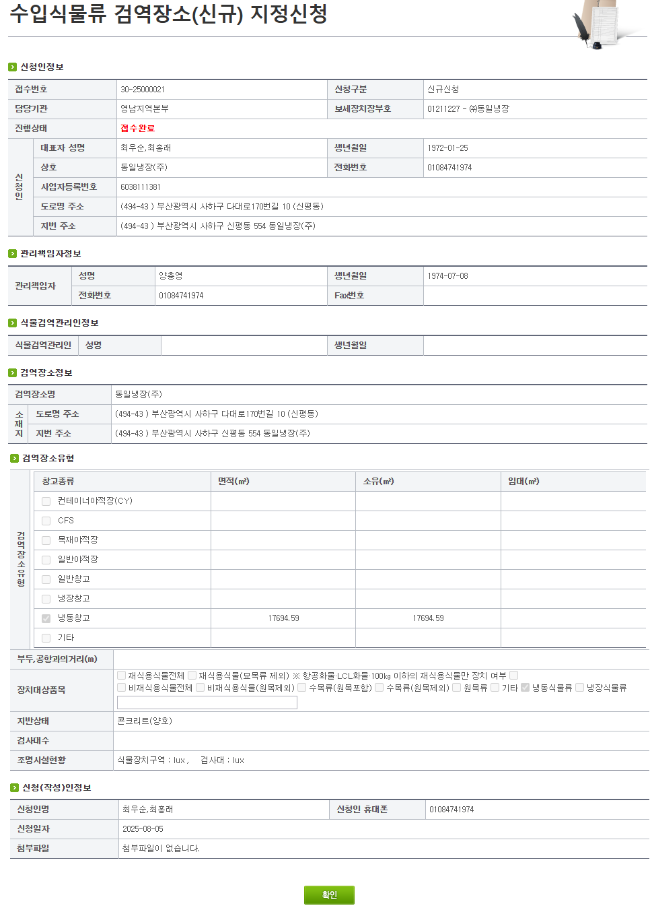※ 이동검사대, 조명, 온도보고, 창고본다.
※ 신청처리는 7일이지만 방문검사 협의(빠르면 다음날 올수 있음), 방문검사시 문제없으면 다음날에라도 입고가능
※ 2025.08.05 051)600-6227
2025년11월7일 검역시행장 변경신청
수의사실이동인데 검역시행장변경신청만 하였음
검역시행장 변경신청
251104수의사실이전 변경신청관련 문의 : 신청서, 지정서원본, 기존 수의사실 평면도,
농림축산검역본부 축산물위생과 중앙동 10번출구 검역시행장 지정변경신청 담당자(600-0406)
이전할 수의사실 평면도, 평면도는 그려서 제출하면 된다.
날짜 쓰지말고 제출하라고 하였음. 제출시 직접 갖다줌
책상, 컴퓨터, 기자재 모두 구비한 상태로 신청하라는 취지.
▢ 2023.03.13 : 상시근로자 사업장 1/4분기 산업안전보건교육 및 법정교육 시행의 건
줄바꿈 ⓐ ⓑ ⓒ ⓓ ⓔ ⓕ ⓖ ⓗ ⓘ ⓙ ① ② ③ ④ ⑤ ⑥ ⑦ ⑧ ⑨ ⑩ ⑪ ⑫ ⑬ ⑭ ⑮
※ ★ ● • ▢ ( < - < )( > - > ) ▸ ☞ \ Ø 「 」(여백 :  ) (탭 : 	)
※ Entity code (엔티티 코드) : 특수문자 표현

출처 : https://pracon.tistory.com/154
• 캔버스_개별카테고리_h6의title과id순서 필요성
1-1. 캔버스에서 id와 연결된 h6의 위치 : .캔버스관련모두감싸기 > .캔버스 > .개별카테고리 > div > h6
1-2. 1-1 중에서 title을 가진 요소
2. .모든id모음위치자유 > [id] : 첫번째 자식요소중 id가 있는 요소
•
html에서 id추출, 오른쪽의 title과 연결안된것은 노랑색 표시,
노랑색칠은 카테고리내 h6 안에 title에 없다는 것.
id개수 :
노랑색칠은 카테고리내 h6 안에 title에 없다는 것.
id개수 :
왼쪽의 id와 연결안된것은 노랑색 표시,
html의 순서대로 기록되는 듯
title개수 :
html의 순서대로 기록되는 듯
title개수 :
• onclick 함수 없다고 가정할때

• onclick 함수 작동 설명, image 폴더 안에는 .png, .txt, .pdf 등의 파일이 있다. 기타 모둔 파일 이름을 추출한다.
1. 폴더 선택하기 전에, 'onclick함수' 실행됨
2. '폴더선택 후 업로드 한 결과 발생시' 함수 내부에 이벤트리스너를 등록해 두면 'change'로 감지한다.
3. 다음 정보를 'change' 함수에서 사용한다.
a) 인풋요소(change 감지 확인요소) : const fileInput = document.querySelector('#file_input');
b) 모든 파일리스트(배열) : const selectedDirectories = fileInput.files;
c) 하나씩 확인하며 코딩 : for (const file of selectedDirectories) {...코딩}
• .png 파일은 html에서 등록할때 : <img src=" 로 시작하고 " 로 끝나는곳 안에 src값이 들어간다.
• .txt 파일과 .pdf 파일은 html에서 등록할때 : <embed src=" 로 시작하고 " 로 끝나는곳 안에 src값이 들어간다.
• 공통적으로 src=" 로 시작하고 " 로 끝나는곳에 안에 src값이 들어간다.
• 그러한 값들의 출현횟수를 정규식으로 표현하면 ==> var 출현횟수 = 원본정보text.match(/src="*"/ig).length;
• 문자열이 하나이상인 것을 표현하면 ==> 원본정보text.match(/src="?*"/ig).length;
• '사용된html' 은 function 사용된html하나씩확인() : html전부 textarea에 붙여넣고 실행. 현황파악의 src 값 대조하여 html 이름 기록
• '미사용개수' 는 html 안에 src로 기록되어 있지만 파일이 없는 경우이다. 클릭하면 리스트를 볼수 있다.(d-none 클래스 toggle)
• function textarea정보에서html파일이름추출() 에서 특정 src(처음꺼 한번만)가 2회 기록되어서 [0] 배열 무시하도록 코딩했음
• 아래는 src[0], src[1]의 값이 기록되도록 했음. 같으면 안되는데 같이 나온다....
• 찾은src들[0] :
• 찾은src들[1] :
결과표 파악된 html 리스트 :
function image폴더클릭_파일사용현황파악()
_
원본정보
html파일
값있는src개수
사용중개수
미사용개수
src=""
X
현재html
_
_
_
_
_
_
원본정보
html파일
값있는src개수
사용중개수
미사용개수
src=""
sdfsdfsdfsdf
textarea
_
_
_
_
_
_
원본정보
html파일
값있는src개수
사용중개수
미사용개수
src=""
textarea
_
_
_
_
_
_
원본정보
html파일
값있는src개수
사용중개수
미사용개수
src=""
textarea
_
_
_
_
_
_
원본정보
html파일
값있는src개수
사용중개수
미사용개수
src=""
textarea
_
_
_
_
_
_
원본정보
html파일
값있는src개수
사용중개수
미사용개수
src=""
textarea
_
_
_
_
_
칠레 연어 가공장 10064, 학명 : Oncorhynchus Kisutch
•정리_촬영:2025 02 03 === 19/11/2024, 18/11/2024, DD/MM/YYYY, ELABORATION DATE, BEST BEFORE 동림
사진_촬영:2025 02 03 === 19/11/2024, 18/11/2024, DD/MM/YYYY, ELABORATION DATE, BEST BEFORE 동림
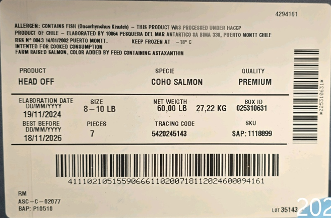칠레 연어 가공장 10256, 학명 : Oncorhynchus Kisutch
•정리_촬영:2025 01 20 === 05 AUG 2024, 04 AUG 2026, PRODUCTION DATE, BEST BEFORE 동림
•정리_촬영:2025 01 21 === 12 AUG 2024, 11 AUG 2026, PRODUCTION DATE, BEST BEFORE 동림
사진_촬영:2025 01 20 === 05 AUG 2024, 04 AUG 2026, PRODUCTION DATE, BEST BEFORE 동림
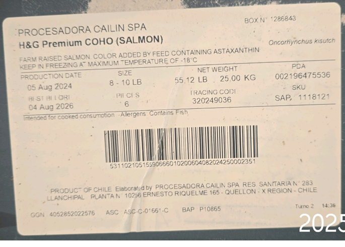사진_촬영:2025 01 21 === 12 AUG 2024, 11 AUG 2026, PRODUCTION DATE, BEST BEFORE 동림
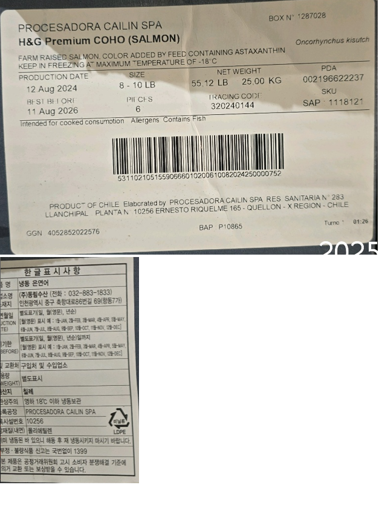칠레 연어 가공장 10673, 학명 : Oncorhynchus Kisutch
•정리_촬영:2025 02 03 === 23 NOV 2024, 22 NOV 2026, PRODUCTION DATE, BEST BEFORE 동림
사진_촬영:2025 02 03 === 23 NOV 2024, 22 NOV 2026, PRODUCTION DATE, BEST BEFORE 동림
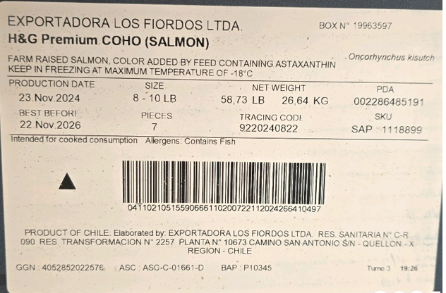칠레 연어 가공장 10678, 학명 : Oncorhynchus Kisutch
•정리_촬영:2025 01 21 === 26 NOV 2024, 25 NOV 2026, PRODUCTION DATE, BEST BEFORE 동림
•정리_촬영:2025 01 10 === 27 NOV 2024, 26 NOV 2026, PRODUCTION DATE, BEST BEFORE 동림
사진_촬영:2025 01 21 === 26 NOV 2024, 25 NOV 2026, PRODUCTION DATE, BEST BEFORE 동림
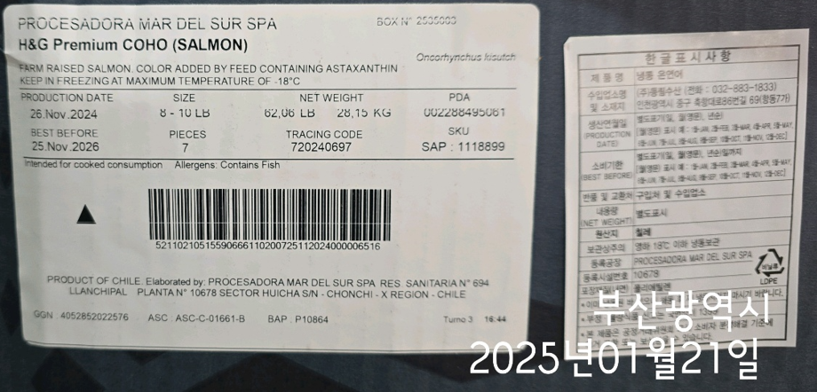사진_촬영:2025 01 10 === 27 NOV 2024, 26 NOV 2026, PRODUCTION DATE, BEST BEFORE 동림
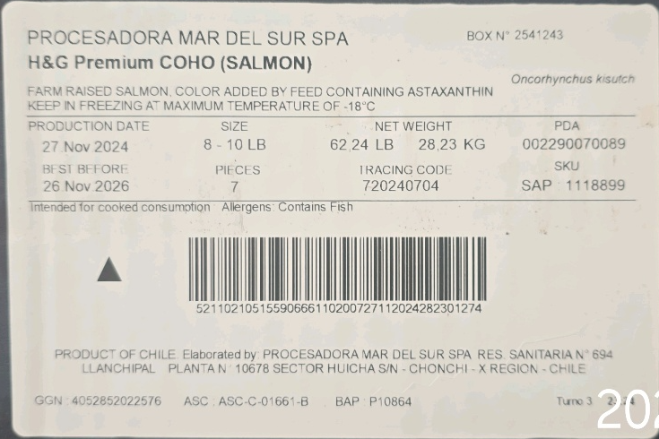칠레 연어 가공장 10708, 학명 : Oncorhynchus Kisutch
•정리_촬영:2024 12 26 === 06/NOV/2024, 06/NOV/2026, Elabora date, Expire date 롯데
•정리_촬영:2025 01 16 === 21/NOV/2024, 21/NOV/2026, Elabora date, Expire date CK
사진_촬영:2024 12 26 === 06/NOV/2024, 06/NOV/2026, Elabora date, Expire date 롯데
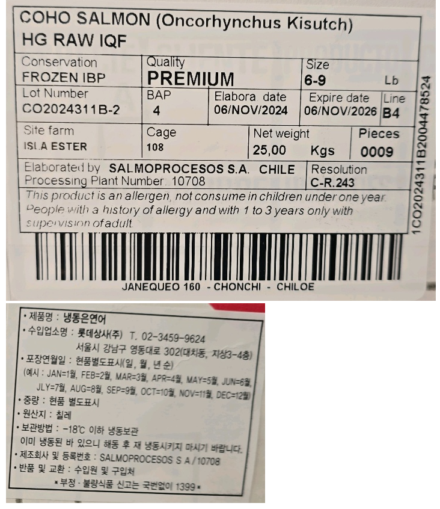사진_촬영:2025 01 16 === 21/NOV/2024, 21/NOV/2026, Elabora date, Expire date CK
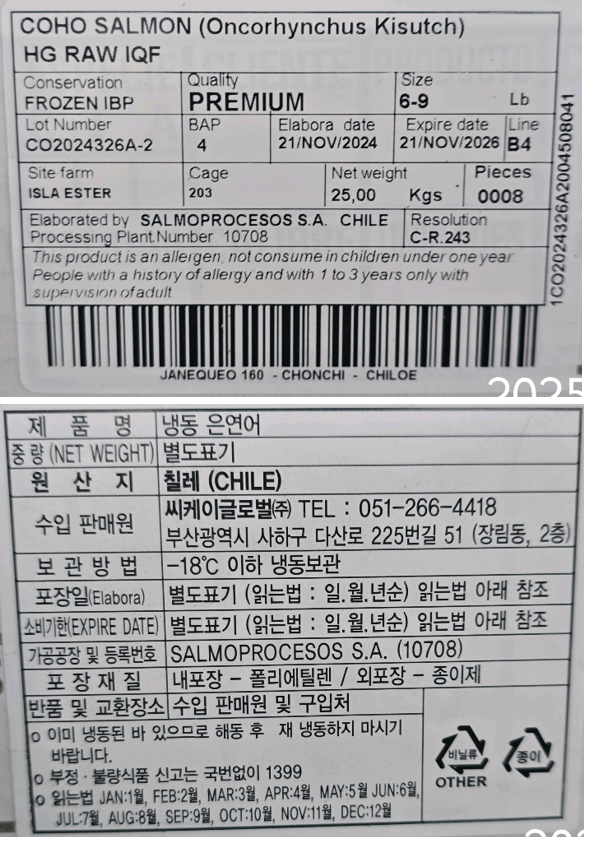
품명 규격 표시 Kg 비고
감자말이새우 20g(4kg) 새우가공품 4
감자말이새우 30g(6kg) 새우가공품 6
갑오징어롤 2/3미(4kg) 씨푸드 4
갑오징어롤 3/5미(4kg) 씨푸드 4
갑오징어롤 5/7미(4kg) 씨푸드 4
갑오징어채 400g(4kg) 초밥·횟감 4
갑오징어홀크린 100/200(4kg) 씨푸드 4
갑오징어홀크린 200/300(4kg) 씨푸드 4
갑오징어홀크린 300/500(4kg) 씨푸드 4
노바시새우 20미(9.08kg) 새우 9.08
노바시새우 30미(6kg) 새우 6
노바시새우 40미(6kg) 새우 6
멘보샤 15g(4.8kg) 새우가공품 4.8
멘보샤 25g(5kg) 새우가공품 5
멘보샤 30g(6kg) 새우가공품 6
민물장어 2미 초밥·횟감 10
민물장어 6미 초밥·횟감 10
민물장어 8미 초밥·횟감 10
민물장어 10미 초밥·횟감 10
버터플라이 브레디드 25g(5kg) 새우가공품 5
브레디드 쉬림프 20g*10미 새우가공품 4
브레디드 쉬림프 20g*50미 새우가공품 6
브레디드 쉬림프 20g*30미 새우가공품 6
브레디드 쉬림프 30g(30%) 새우가공품 6
브레디드 쉬림프 30g(40%) 새우가공품 6
브레디드 쉬림프 50g*10미 새우가공품 5
브레디드 쉬림프 40g*10미 새우가공품 8
블랙타이거새우 10미/1.3kg 새우 7.8
블랙타이거새우 12미/1.3kg 새우 7.8
블랙타이거새우 15미/1.3kg 새우 7.8
블랙타이거새우 18미/1.3kg 새우 7.8
블랙타이거새우 20미/1.3kg 새우 7.8
블랙타이거새우 25미/1.3kg 새우 7.8
블랙타이거새우 30미/1.3kg 새우 7.8
블랙타이거새우 40미/1.3kg 새우 7.8
블랙타이거새우 8미/500g 새우 5
블랙타이거새우 10미/500g 새우 5
블랙타이거새우 12미/500g 새우 5
블랙타이거새우 15미/500g 새우 5
블랙타이거새우 20미/500g 새우 5
빅버터플라이 브레디드 쉬림프 50g(5kg) 새우가공품 5
생새우살 26/30(1kg) 새우 10
생새우살 31/40(1kg) 새우 10
생새우살 51/70(900g) 새우 9
생새우살 71/90(900g) 새우 9
생새우살 31/50(200g) 새우 4
생새우살 51/70(200g) 새우 4
생새우살 71/90(200g) 새우 4
생새우살 26/30(10kg) 새우 10
생새우살 31/40(10kg) 새우 10
생새우살 31/50(10kg) 새우 10
생새우살 51/70(10kg) 새우 10
생새우살 71/90(10kg) 새우 10
에비카츠 100g(8kg) 새우가공품 8
에비카츠 80g(9.6kg) 새우가공품 9.6
에비카츠 60g(7.2kg) 새우가공품 7.2
에비카츠 50g(5kg) 새우가공품 5
이지필새우 16/20(900g) 새우 9
이지필새우 16/20(10kg) 새우 10
자숙새우살 100/200(200g) 새우 4
자숙새우살 200/300(200g) 새우 4
자숙새우살 100/200(10kg) 새우 10
자숙새우살 200/300(10kg) 새우 10
자숙칵테일 31/50(10kg) 새우 10
자숙칵테일 51/70(10kg) 새우 10
자숙칵테일 71/90(10kg) 새우 10
자숙칵테일 91/120(10kg) 새우 10
자숙칵테일 31/50(200g) 새우 4
자숙칵테일 51/70(200g) 새우 4
자숙칵테일 71/90(200g) 새우 4
초갑오징어 12g(9.6kg) 초밥·횟감 9.6
초갑오징어 10g(8kg) 초밥·횟감 8
초갑오징어 8g(6.4kg) 초밥·횟감 6.4
초갑오징어 6g(4.8kg) 초밥·횟감 4.8
초문어 10g(8kg) 초밥·횟감 8
초문어 8g(6.4kg) 초밥·횟감 6.4
초문어 6g(4.8kg) 초밥·횟감 4.8
초문어 5g(4kg) 초밥·횟감 4
초민물장어 8g(6.4kg) 초밥·횟감 6.4
초민물장어 6g(4.8kg) 초밥·횟감 4.8
초백미(NB) 16g(6.4kg) 초밥·횟감 6.4
초백미(NB) 14g(11.2kg) 초밥·횟감 11.2
초백미(NB) 12g(9.6kg) 초밥·횟감 9.6
초백미(NB) 10g(8kg) 초밥·횟감 8
초백미(NB) 8g(6.4kg) 초밥·횟감 6.4
초백미(NB) 6g(4.8kg) 초밥·횟감 4.8
초백미(하비코) 16g(6.4kg) 초밥·횟감 6.4
초백미(하비코) 14g(11.2kg) 초밥·횟감 11.2
초백미(하비코) 12g(9.6kg) 초밥·횟감 9.6
초백미(하비코) 10g(8kg) 초밥·횟감 8
초백미(하비코) 8g(6.4kg) 초밥·횟감 6.4
초백미(하비코) 6.5g(5.2kg) 초밥·횟감 5.2
초새우 8LH(4.4kg) 초밥·횟감 4.4
초새우 7LH(4kg) 초밥·횟감 4
초새우 6LH(3.6kg) 초밥·횟감 3.6
초새우 5LH(3.2kg) 초밥·횟감 3.2
초새우 4LH(2.8kg) 초밥·횟감 2.8
초새우 4L(3.2kg) 초밥·횟감 3.2
초새우 3L(2.7kg) 초밥·횟감 2.7
초새우 2L(2.8kg) 초밥·횟감 2.8
초새우 L(2.2kg) 초밥·횟감 2.2
초새우 M(3.2kg) 초밥·횟감 3.2
초솔방울구운한치 10g(8kg) 초밥·횟감 8
초솔방울구운한치 8g(6.4kg) 초밥·횟감 6.4
초솔방울구운한치 6g(4.8kg) 초밥·횟감 4.8
초아마에비 3L(4kg) 초밥·횟감 4
초아마에비 2L(3.2kg) 초밥·횟감 3.2
초아마에비 L(2.8kg) 초밥·횟감 2.8
초이까 8g(6.4kg) 초밥·횟감 6.4
초이까 6g(4.8kg) 초밥·횟감 4.8
초이까 5g(4kg) 초밥·횟감 4
초적새우 6L(3.2kg) 초밥·횟감 3.2
초적새우 5L(2.6kg) 초밥·횟감 2.6
초조미가리비 10g 초밥·횟감 8
초조미가리비 8g 초밥·횟감 6.4
초조미가리비 6g 초밥·횟감 4.8
초조미가리비 5g 초밥·횟감 4
초주꾸미 8g(6.4kg) 초밥·횟감 6.4
초주꾸미 6g(4.8kg) 초밥·횟감 4.8
초청미(NB) 12g(9.6kg) 초밥·횟감 9.6
초청미(NB) 10g(8kg) 초밥·횟감 8
초청미(NB) 8g(6.4kg) 초밥·횟감 6.4
초청미(NB) 6g(4.8kg) 초밥·횟감 4.8
초청미(하비코) 12g(9.6kg) 초밥·횟감 9.6
초청미(하비코) 10g(8kg) 초밥·횟감 8
초청미(하비코) 8g(6.4kg) 초밥·횟감 6.4
초청미(하비코) 6.5g(5.2kg) 초밥·횟감 5.2
초한치 10g(8kg) 초밥·횟감 8
초한치 8g(6.4kg) 초밥·횟감 6.4
초한치 6g(4.8kg) 초밥·횟감 4.8
초한치 5g(4kg) 초밥·횟감 4
초한치다리 6g(4.8kg) 초밥·횟감 4.8
코코넛 버터플라이 브레디드 쉬림프 25g(5kg) 새우가공품 5
타코와사비 1kg(12kg) 초밥·횟감 12
탈각새우 16/20(1.8kg) 새우 10.8
탈각새우 21/25(1.8kg) 새우 10.8
탈각새우 26/30(1.8kg) 새우 10.8
탈각새우 31/35(1.8kg) 새우 10.8
탈각새우 31/40(1.8kg) 새우 10.8
탈각새우 16/20(900g) 새우 9
탈각새우 21/25(900g) 새우 9
탈각새우 26/30(900g) 새우 9
탈각새우 31/40(900g) 새우 9
탈각새우 41/50(900g) 새우 9
탈각새우 31/40(10kg) 새우 10
탈각새우(아르헨티나 붉은새우) 16/20(4kg) 새우 4
탈각새우(인니) 16/20(1.8kg) 새우 10.8
탈각새우(인니) 21/25(1.8kg) 새우 10.8
탈각새우(인니) 26/30(1.8kg) 새우 10.8
탈각새우(인니) 31/35(1.8kg) 새우 10.8
탈각새우(인니) 31/40(1.8kg) 새우 10.8
통살새우볼 20g(5kg) 새우가공품 5
한치채 400g(4kg) 초밥·횟감 4
헤드온 브레디드 쉬림프 50g*10미 새우가공품 5
헤드온 브레디드 쉬림프 50g*6미 새우가공품 6
흰다리새우 15미/500g 새우 5
흰다리새우 20미/500g 새우 5
흰다리새우 25미/500g 새우 5
흰다리새우 30미/500g 새우 5
흰다리새우 40미/500g 새우 5
흰다리새우 50미/500g 새우 5